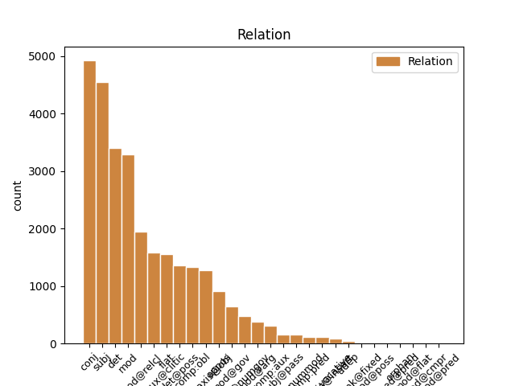
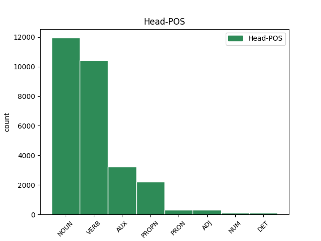
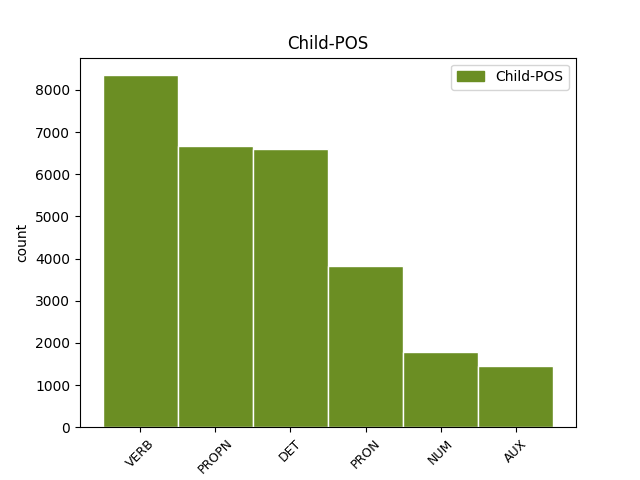

Distribution of features within this leaf



Agreement Rules sorted by frequency.
- When the dependent token is the determiner(det) of the head token, and the dependent token is DET.
1 Wszyscy _ _ _ _ 0 _ _ _
2 podzielamy _ _ _ _ 0 _ _ _
3 tę ten DET adj:sg:acc:f:pos Case=Acc|Gender=Fem|Number=Sing|PronType=Dem 5 det _ _
4 samą _ _ _ _ 0 _ _ _
5 ideę idea NOUN subst:sg:acc:f Case=Acc|Gender=Fem|Number=Sing 0 _ _ _
6 : _ _ _ _ 0 _ _ _
7 mamy _ _ _ _ 0 _ _ _
8 swobodę _ _ _ _ 0 _ _ _
9 przepływu _ _ _ _ 0 _ _ _
10 orzeczeń _ _ _ _ 0 _ _ _
11 sądowych _ _ _ _ 0 _ _ _
12 . _ _ _ _ 0 _ _ _
1 Wszyscy _ _ _ _ 0 _ _ _
2 podzielamy podzielać VERB fin:pl:pri:imperf Aspect=Imp|Mood=Ind|Number=Plur|Person=1|Tense=Pres|VerbForm=Fin|Voice=Act 0 _ _ _
3 tę _ _ _ _ 0 _ _ _
4 samą _ _ _ _ 0 _ _ _
5 ideę _ _ _ _ 0 _ _ _
6 : _ _ _ _ 0 _ _ _
7 mamy mieć VERB fin:pl:pri:imperf Aspect=Imp|Mood=Ind|Number=Plur|Person=1|Tense=Pres|VerbForm=Fin|Voice=Act 2 conj _ _
8 swobodę _ _ _ _ 0 _ _ _
9 przepływu _ _ _ _ 0 _ _ _
10 orzeczeń _ _ _ _ 0 _ _ _
11 sądowych _ _ _ _ 0 _ _ _
12 . _ _ _ _ 0 _ _ _
1 Jest być VERB fin:sg:ter:imperf Aspect=Imp|Mood=Ind|Number=Sing|Person=3|Tense=Pres|VerbForm=Fin|Voice=Act 0 _ _ _
2 tu _ _ _ _ 0 _ _ _
3 Stitch Stitch PROPN subst:sg:nom:m1 Animacy=Hum|Case=Nom|Gender=Masc|Number=Sing 1 subj _ SpaceAfter=No
4 , _ _ _ _ 0 _ _ _
5 a _ _ _ _ 0 _ _ _
6 ja _ _ _ _ 0 _ _ _
7 nigdy _ _ _ _ 0 _ _ _
8 nie _ _ _ _ 0 _ _ _
9 ruszam _ _ _ _ 0 _ _ _
10 do _ _ _ _ 0 _ _ _
11 bitwy _ _ _ _ 0 _ _ _
12 bez _ _ _ _ 0 _ _ _
13 mojego _ _ _ _ 0 _ _ _
14 plastiku _ _ _ _ 0 _ _ _
15 . _ _ _ _ 0 _ _ _
1 Jeśli _ _ _ _ 0 _ _ _
2 nie _ _ _ _ 0 _ _ _
3 wiesz _ _ _ _ 0 _ _ _
4 , _ _ _ _ 0 _ _ _
5 jak _ _ _ _ 0 _ _ _
6 mu _ _ _ _ 0 _ _ _
7 powiedzieć _ _ _ _ 0 _ _ _
8 , _ _ _ _ 0 _ _ _
9 ja ja PRON ppron12:sg:nom:m1:pri Animacy=Hum|Case=Nom|Gender=Masc|Number=Sing|Person=1|PronType=Prs 12 subj _ _
10 z _ _ _ _ 0 _ _ _
11 nim _ _ _ _ 0 _ _ _
12 porozmawiam porozmawiać VERB fin:sg:pri:perf Aspect=Perf|Mood=Ind|Number=Sing|Person=1|Tense=Fut|VerbForm=Fin|Voice=Act 0 _ _ _
13 . _ _ _ _ 0 _ _ _
1 A _ _ _ _ 0 _ _ _
2 ty _ _ _ _ 0 _ _ _
3 mogła móc VERB praet:sg:f:imperf Aspect=Imp|Gender=Fem|Mood=Ind|Number=Sing|Tense=Past|VerbForm=Fin|Voice=Act 4 comp:aux@clitic _ _
4 ś być AUX aglt:sg:sec:imperf:nwok Aspect=Imp|Clitic=Yes|Number=Sing|Person=2|Variant=Short 0 _ _ _
5 zrujnować _ _ _ _ 0 _ _ _
6 swoje _ _ _ _ 0 _ _ _
7 dla _ _ _ _ 0 _ _ _
8 Dale _ _ _ _ 0 _ _ _
9 . _ _ _ _ 0 _ _ _
1 Wyniki _ _ _ _ 0 _ _ _
2 pierwszego _ _ _ _ 0 _ _ _
3 zaproszenia _ _ _ _ 0 _ _ _
4 do _ _ _ _ 0 _ _ _
5 składania _ _ _ _ 0 _ _ _
6 wniosków _ _ _ _ 0 _ _ _
7 w _ _ _ _ 0 _ _ _
8 ramach _ _ _ _ 0 _ _ _
9 sieci _ _ _ _ 0 _ _ _
10 Marie Marie PROPN subst:sg:gen:f Case=Gen|Gender=Fem|Number=Sing 0 _ _ _
11 Curie Curie PROPN subst:sg:gen:f Case=Gen|Gender=Fem|Number=Sing 10 flat _ _
12 kształcenia _ _ _ _ 0 _ _ _
13 początkowego _ _ _ _ 0 _ _ _
1 W _ _ _ _ 0 _ _ _
2 uzasadnieniu _ _ _ _ 0 _ _ _
3 swojego _ _ _ _ 0 _ _ _
4 wniosku _ _ _ _ 0 _ _ _
5 o _ _ _ _ 0 _ _ _
6 udzielenie _ _ _ _ 0 _ _ _
7 azylu _ _ _ _ 0 _ _ _
8 podał _ _ _ _ 0 _ _ _
9 , _ _ _ _ 0 _ _ _
10 że _ _ _ _ 0 _ _ _
11 na _ _ _ _ 0 _ _ _
12 skutek _ _ _ _ 0 _ _ _
13 rozpaczy _ _ _ _ 0 _ _ _
14 z _ _ _ _ 0 _ _ _
15 powodu _ _ _ _ 0 _ _ _
16 pozbawienia _ _ _ _ 0 _ _ _
17 wolności _ _ _ _ 0 _ _ _
18 swojego swój DET adj:sg:gen:m1:pos Animacy=Hum|Case=Gen|Gender=Masc|Number=Sing|Poss=Yes|PronType=Prs|Reflex=Yes 19 det@poss _ _
19 brata brat NOUN subst:sg:gen:m1 Animacy=Hum|Case=Gen|Gender=Masc|Number=Sing 0 _ _ _
20 zasztyletował _ _ _ _ 0 _ _ _
21 członka _ _ _ _ 0 _ _ _
22 partii _ _ _ _ 0 _ _ _
23 Baath _ _ _ _ 0 _ _ _
24 . _ _ _ _ 0 _ _ _
1 W _ _ _ _ 0 _ _ _
2 tych _ _ _ _ 0 _ _ _
3 ramach _ _ _ _ 0 _ _ _
4 prezydencja _ _ _ _ 0 _ _ _
5 będzie _ _ _ _ 0 _ _ _
6 koordynowała _ _ _ _ 0 _ _ _
7 rozwiązania rozwiązanie NOUN subst:pl:acc:n:ncol Case=Acc|Gender=Neut|Number=Plur 0 _ _ _
8 , _ _ _ _ 0 _ _ _
9 które _ _ _ _ 0 _ _ _
10 cieszą cieszyć VERB fin:pl:ter:imperf Aspect=Imp|Mood=Ind|Number=Plur|Person=3|Tense=Pres|VerbForm=Fin|Voice=Act 7 mod@relcl _ _
11 się _ _ _ _ 0 _ _ _
12 największym _ _ _ _ 0 _ _ _
13 poparciem _ _ _ _ 0 _ _ _
14 w _ _ _ _ 0 _ _ _
15 Unii _ _ _ _ 0 _ _ _
16 Europejskiej _ _ _ _ 0 _ _ _
17 i _ _ _ _ 0 _ _ _
18 jednocześnie _ _ _ _ 0 _ _ _
19 zapewniają _ _ _ _ 0 _ _ _
20 długotrwałą _ _ _ _ 0 _ _ _
21 stabilizację _ _ _ _ 0 _ _ _
22 w _ _ _ _ 0 _ _ _
23 regionie _ _ _ _ 0 _ _ _
24 . _ _ _ _ 0 _ _ _
1 Również _ _ _ _ 0 _ _ _
2 Republika _ _ _ _ 0 _ _ _
3 Federalna _ _ _ _ 0 _ _ _
4 Niemiec _ _ _ _ 0 _ _ _
5 przedstawiła _ _ _ _ 0 _ _ _
6 na _ _ _ _ 0 _ _ _
7 swą _ _ _ _ 0 _ _ _
8 obronę _ _ _ _ 0 _ _ _
9 , _ _ _ _ 0 _ _ _
10 zarówno _ _ _ _ 0 _ _ _
11 w _ _ _ _ 0 _ _ _
12 ramach _ _ _ _ 0 _ _ _
13 postępowania _ _ _ _ 0 _ _ _
14 poprzedzającego _ _ _ _ 0 _ _ _
15 wniesienie _ _ _ _ 0 _ _ _
16 skargi _ _ _ _ 0 _ _ _
17 , _ _ _ _ 0 _ _ _
18 jak _ _ _ _ 0 _ _ _
19 również _ _ _ _ 0 _ _ _
20 w _ _ _ _ 0 _ _ _
21 niniejszym _ _ _ _ 0 _ _ _
22 postępowaniu _ _ _ _ 0 _ _ _
23 , _ _ _ _ 0 _ _ _
24 argumenty _ _ _ _ 0 _ _ _
25 dotyczące _ _ _ _ 0 _ _ _
26 tych _ _ _ _ 0 _ _ _
27 dwóch dwa NUM num:pl:gen:n:congr:ncol Case=Gen|Gender=Neut|Number=Plur|NumForm=Word 28 mod _ _
28 pojęć pojęcie NOUN subst:pl:gen:n:ncol Case=Gen|Gender=Neut|Number=Plur 0 _ _ _
29 . _ _ _ _ 0 _ _ _
1 W _ _ _ _ 0 _ _ _
2 tych _ _ _ _ 0 _ _ _
3 ramach _ _ _ _ 0 _ _ _
4 prezydencja _ _ _ _ 0 _ _ _
5 będzie _ _ _ _ 0 _ _ _
6 koordynowała _ _ _ _ 0 _ _ _
7 rozwiązania _ _ _ _ 0 _ _ _
8 , _ _ _ _ 0 _ _ _
9 które który DET adj:pl:nom:n:pos Case=Nom|Gender=Neut|Number=Plur|PronType=Rel 10 subj _ _
10 cieszą cieszyć VERB fin:pl:ter:imperf Aspect=Imp|Mood=Ind|Number=Plur|Person=3|Tense=Pres|VerbForm=Fin|Voice=Act 0 _ _ _
11 się _ _ _ _ 0 _ _ _
12 największym _ _ _ _ 0 _ _ _
13 poparciem _ _ _ _ 0 _ _ _
14 w _ _ _ _ 0 _ _ _
15 Unii _ _ _ _ 0 _ _ _
16 Europejskiej _ _ _ _ 0 _ _ _
17 i _ _ _ _ 0 _ _ _
18 jednocześnie _ _ _ _ 0 _ _ _
19 zapewniają _ _ _ _ 0 _ _ _
20 długotrwałą _ _ _ _ 0 _ _ _
21 stabilizację _ _ _ _ 0 _ _ _
22 w _ _ _ _ 0 _ _ _
23 regionie _ _ _ _ 0 _ _ _
24 . _ _ _ _ 0 _ _ _
1 W _ _ _ _ 0 _ _ _
2 uzasadnieniu _ _ _ _ 0 _ _ _
3 swojego _ _ _ _ 0 _ _ _
4 wniosku _ _ _ _ 0 _ _ _
5 o _ _ _ _ 0 _ _ _
6 udzielenie _ _ _ _ 0 _ _ _
7 azylu _ _ _ _ 0 _ _ _
8 podał _ _ _ _ 0 _ _ _
9 , _ _ _ _ 0 _ _ _
10 że _ _ _ _ 0 _ _ _
11 na _ _ _ _ 0 _ _ _
12 skutek _ _ _ _ 0 _ _ _
13 rozpaczy _ _ _ _ 0 _ _ _
14 z _ _ _ _ 0 _ _ _
15 powodu _ _ _ _ 0 _ _ _
16 pozbawienia _ _ _ _ 0 _ _ _
17 wolności _ _ _ _ 0 _ _ _
18 swojego _ _ _ _ 0 _ _ _
19 brata _ _ _ _ 0 _ _ _
20 zasztyletował _ _ _ _ 0 _ _ _
21 członka _ _ _ _ 0 _ _ _
22 partii partia NOUN subst:sg:gen:f Case=Gen|Gender=Fem|Number=Sing 0 _ _ _
23 Baath Baath PROPN subst:sg:nom:f Case=Nom|Gender=Fem|Number=Sing 22 appos _ SpaceAfter=No
24 . _ _ _ _ 0 _ _ _
1 Wyniki _ _ _ _ 0 _ _ _
2 pierwszego _ _ _ _ 0 _ _ _
3 zaproszenia _ _ _ _ 0 _ _ _
4 do _ _ _ _ 0 _ _ _
5 składania _ _ _ _ 0 _ _ _
6 wniosków _ _ _ _ 0 _ _ _
7 w _ _ _ _ 0 _ _ _
8 ramach _ _ _ _ 0 _ _ _
9 sieci sieć NOUN subst:sg:gen:f Case=Gen|Gender=Fem|Number=Sing 0 _ _ _
10 Marie Marie PROPN subst:sg:gen:f Case=Gen|Gender=Fem|Number=Sing 9 mod _ _
11 Curie _ _ _ _ 0 _ _ _
12 kształcenia _ _ _ _ 0 _ _ _
13 początkowego _ _ _ _ 0 _ _ _
1 W _ _ _ _ 0 _ _ _
2 przeciwieństwie _ _ _ _ 0 _ _ _
3 do _ _ _ _ 0 _ _ _
4 pozostałej _ _ _ _ 0 _ _ _
5 trójki _ _ _ _ 0 _ _ _
6 zachowywał _ _ _ _ 0 _ _ _
7 się _ _ _ _ 0 _ _ _
8 tak _ _ _ _ 0 _ _ _
9 , _ _ _ _ 0 _ _ _
10 jakby _ _ _ _ 0 _ _ _
11 przygoda _ _ _ _ 0 _ _ _
12 go on PRON ppron3:sg:acc:m1:ter:nakc:npraep Animacy=Hum|Case=Acc|Gender=Masc|Number=Sing|Person=3|PrepCase=Npr|PronType=Prs|Variant=Short 13 comp:obl _ _
13 cieszyła cieszyć VERB praet:sg:f:imperf Aspect=Imp|Gender=Fem|Mood=Ind|Number=Sing|Tense=Past|VerbForm=Fin|Voice=Act 0 _ _ _
14 . _ _ _ _ 0 _ _ _
1 - _ _ _ _ 0 _ _ _
2 Twoja _ _ _ _ 0 _ _ _
3 głowa _ _ _ _ 0 _ _ _
4 wygląda wyglądać VERB fin:sg:ter:imperf Aspect=Imp|Mood=Ind|Number=Sing|Person=3|Tense=Pres|VerbForm=Fin|Voice=Act 7 parataxis@obj _ _
5 strasznie _ _ _ _ 0 _ _ _
6 - _ _ _ _ 0 _ _ _
7 stwierdza stwierdzać VERB fin:sg:ter:imperf Aspect=Imp|Mood=Ind|Number=Sing|Person=3|Tense=Pres|VerbForm=Fin|Voice=Act 0 _ _ _
8 . _ _ _ _ 0 _ _ _
1 Zniknął _ _ _ _ 0 _ _ _
2 na _ _ _ _ 0 _ _ _
3 6 6 NUM num:pl:acc:m3:rec Animacy=Inan|Case=Acc|Gender=Masc|Number=Plur|NumForm=Digit|NumType=Card 4 mod@gov _ _
4 dni dzień NOUN subst:pl:gen:m3 Animacy=Inan|Case=Gen|Gender=Masc|Number=Plur 0 _ _ _
5 zanim _ _ _ _ 0 _ _ _
6 poproszono _ _ _ _ 0 _ _ _
7 nas _ _ _ _ 0 _ _ _
8 o _ _ _ _ 0 _ _ _
9 zamknięcie _ _ _ _ 0 _ _ _
10 rosyjskich _ _ _ _ 0 _ _ _
11 Wrót _ _ _ _ 0 _ _ _
12 . _ _ _ _ 0 _ _ _
1 Podpodział _ _ _ _ 0 _ _ _
2 systemu _ _ _ _ 0 _ _ _
3 VAT _ _ _ _ 0 _ _ _
4 ( _ _ _ _ 0 _ _ _
5 tylko _ _ _ _ 0 _ _ _
6 Hiszpania Hiszpania PROPN subst:sg:nom:f Case=Nom|Gender=Fem|Number=Sing 0 _ _ _
7 , _ _ _ _ 0 _ _ _
8 Francja Francja PROPN subst:sg:nom:f Case=Nom|Gender=Fem|Number=Sing 6 conj _ _
9 i _ _ _ _ 0 _ _ _
10 Włochy _ _ _ _ 0 _ _ _
11 ) _ _ _ _ 0 _ _ _
1 Gliniarze _ _ _ _ 0 _ _ _
2 biegną _ _ _ _ 0 _ _ _
3 do _ _ _ _ 0 _ _ _
4 ognia _ _ _ _ 0 _ _ _
5 , _ _ _ _ 0 _ _ _
6 ale _ _ _ _ 0 _ _ _
7 jego on PRON ppron3:sg:gen:m1:ter:akc:npraep Animacy=Hum|Case=Gen|Gender=Masc|Number=Sing|Person=3|PrepCase=Npr|PronType=Prs|Variant=Long 8 mod _ _
8 ochroniarz ochroniarz NOUN subst:sg:nom:m1 Animacy=Hum|Case=Nom|Gender=Masc|Number=Sing 0 _ _ _
9 ciągle _ _ _ _ 0 _ _ _
10 go _ _ _ _ 0 _ _ _
11 pilnuje _ _ _ _ 0 _ _ _
12 . _ _ _ _ 0 _ _ _
1 Obecnie _ _ _ _ 0 _ _ _
2 ponad _ _ _ _ 0 _ _ _
3 50 _ _ _ _ 0 _ _ _
4 % _ _ _ _ 0 _ _ _
5 leków _ _ _ _ 0 _ _ _
6 stosowanych _ _ _ _ 0 _ _ _
7 w _ _ _ _ 0 _ _ _
8 Europie _ _ _ _ 0 _ _ _
9 w _ _ _ _ 0 _ _ _
10 leczeniu _ _ _ _ 0 _ _ _
11 dzieci _ _ _ _ 0 _ _ _
12 nie _ _ _ _ 0 _ _ _
13 przeszło przejść VERB praet:sg:n:perf Aspect=Perf|Gender=Neut|Mood=Ind|Number=Sing|Tense=Past|VerbForm=Fin|Voice=Act 0 _ _ _
14 badań _ _ _ _ 0 _ _ _
15 klinicznych _ _ _ _ 0 _ _ _
16 w _ _ _ _ 0 _ _ _
17 tym _ _ _ _ 0 _ _ _
18 zakresie _ _ _ _ 0 _ _ _
19 ani _ _ _ _ 0 _ _ _
20 nie _ _ _ _ 0 _ _ _
21 zostało zostać AUX praet:sg:n:perf Aspect=Perf|Gender=Neut|Mood=Ind|Number=Sing|Tense=Past|VerbForm=Fin|Voice=Act 13 conj _ _
22 dopuszczonych _ _ _ _ 0 _ _ _
23 do _ _ _ _ 0 _ _ _
24 obrotu _ _ _ _ 0 _ _ _
25 z _ _ _ _ 0 _ _ _
26 takim _ _ _ _ 0 _ _ _
27 przeznaczeniem _ _ _ _ 0 _ _ _
28 . _ _ _ _ 0 _ _ _
1 Ponadto _ _ _ _ 0 _ _ _
2 wiele wiele DET num:pl:nom:m3:rec Animacy=Inan|Case=Nom|Gender=Masc|Number=Plur|NumType=Card|PronType=Ind 3 det@numgov _ _
3 nowotworów nowotwór NOUN subst:pl:gen:m3 Animacy=Inan|Case=Gen|Gender=Masc|Number=Plur 0 _ _ _
4 uodparnia _ _ _ _ 0 _ _ _
5 się _ _ _ _ 0 _ _ _
6 na _ _ _ _ 0 _ _ _
7 działanie _ _ _ _ 0 _ _ _
8 inhibitorów _ _ _ _ 0 _ _ _
9 VEGF _ _ _ _ 0 _ _ _
10 , _ _ _ _ 0 _ _ _
11 ograniczając _ _ _ _ 0 _ _ _
12 tym _ _ _ _ 0 _ _ _
13 samym _ _ _ _ 0 _ _ _
14 ich _ _ _ _ 0 _ _ _
15 skuteczność _ _ _ _ 0 _ _ _
16 w _ _ _ _ 0 _ _ _
17 dłuższym _ _ _ _ 0 _ _ _
18 okresie _ _ _ _ 0 _ _ _
19 . _ _ _ _ 0 _ _ _
1 W _ _ _ _ 0 _ _ _
2 tych _ _ _ _ 0 _ _ _
3 ramach _ _ _ _ 0 _ _ _
4 prezydencja _ _ _ _ 0 _ _ _
5 będzie być AUX bedzie:sg:ter:imperf Aspect=Imp|Mood=Ind|Number=Sing|Person=3|Tense=Fut|VerbForm=Fin 0 _ _ _
6 koordynowała koordynować VERB praet:sg:f:imperf Aspect=Imp|Gender=Fem|Mood=Ind|Number=Sing|Tense=Past|VerbForm=Fin|Voice=Act 5 comp:aux _ _
7 rozwiązania _ _ _ _ 0 _ _ _
8 , _ _ _ _ 0 _ _ _
9 które _ _ _ _ 0 _ _ _
10 cieszą _ _ _ _ 0 _ _ _
11 się _ _ _ _ 0 _ _ _
12 największym _ _ _ _ 0 _ _ _
13 poparciem _ _ _ _ 0 _ _ _
14 w _ _ _ _ 0 _ _ _
15 Unii _ _ _ _ 0 _ _ _
16 Europejskiej _ _ _ _ 0 _ _ _
17 i _ _ _ _ 0 _ _ _
18 jednocześnie _ _ _ _ 0 _ _ _
19 zapewniają _ _ _ _ 0 _ _ _
20 długotrwałą _ _ _ _ 0 _ _ _
21 stabilizację _ _ _ _ 0 _ _ _
22 w _ _ _ _ 0 _ _ _
23 regionie _ _ _ _ 0 _ _ _
24 . _ _ _ _ 0 _ _ _
1 Komentarz komentarz NOUN subst:sg:nom:m3 Animacy=Inan|Case=Nom|Gender=Masc|Number=Sing 0 _ _ _
2 jury _ _ _ _ 0 _ _ _
3 : _ _ _ _ 0 _ _ _
4 System _ _ _ _ 0 _ _ _
5 monitorowania _ _ _ _ 0 _ _ _
6 i _ _ _ _ 0 _ _ _
7 kontroli _ _ _ _ 0 _ _ _
8 energii _ _ _ _ 0 _ _ _
9 jest być AUX fin:sg:ter:imperf Aspect=Imp|Mood=Ind|Number=Sing|Person=3|Tense=Pres|VerbForm=Fin|Voice=Act 1 parataxis@obj _ _
10 stosowany _ _ _ _ 0 _ _ _
11 przez _ _ _ _ 0 _ _ _
12 dużego _ _ _ _ 0 _ _ _
13 detalistę _ _ _ _ 0 _ _ _
14 w _ _ _ _ 0 _ _ _
15 celu _ _ _ _ 0 _ _ _
16 osiągnięcia _ _ _ _ 0 _ _ _
17 znacznego _ _ _ _ 0 _ _ _
18 ograniczenia _ _ _ _ 0 _ _ _
19 zużycia _ _ _ _ 0 _ _ _
20 energii _ _ _ _ 0 _ _ _
21 . _ _ _ _ 0 _ _ _
1 Był _ _ _ _ 0 _ _ _
2 to _ _ _ _ 0 _ _ _
3 stary _ _ _ _ 0 _ _ _
4 model _ _ _ _ 0 _ _ _
5 forda _ _ _ _ 0 _ _ _
6 , _ _ _ _ 0 _ _ _
7 długi _ _ _ _ 0 _ _ _
8 i _ _ _ _ 0 _ _ _
9 szeroki _ _ _ _ 0 _ _ _
10 , _ _ _ _ 0 _ _ _
11 w _ _ _ _ 0 _ _ _
12 ciemnym _ _ _ _ 0 _ _ _
13 kolorze kolor NOUN subst:sg:loc:m3 Animacy=Inan|Case=Loc|Gender=Masc|Number=Sing 0 _ _ _
14 , _ _ _ _ 0 _ _ _
15 którego _ _ _ _ 0 _ _ _
16 ; _ _ _ _ 0 _ _ _
17 nie _ _ _ _ 0 _ _ _
18 rozpoznał _ _ _ _ 0 _ _ _
19 em być AUX aglt:sg:pri:imperf:wok Aspect=Imp|Clitic=Yes|Number=Sing|Person=1|Variant=Long 13 mod@relcl _ _
20 w _ _ _ _ 0 _ _ _
21 mdłym _ _ _ _ 0 _ _ _
22 świetle _ _ _ _ 0 _ _ _
23 księżyca _ _ _ _ 0 _ _ _
24 . _ _ _ _ 0 _ _ _
1 Gdy _ _ _ _ 0 _ _ _
2 żandarm _ _ _ _ 0 _ _ _
3 wrócił wrócić VERB praet:sg:m1:perf Animacy=Hum|Aspect=Perf|Gender=Masc|Mood=Ind|Number=Sing|Tense=Past|VerbForm=Fin|Voice=Act 10 mod _ _
4 z _ _ _ _ 0 _ _ _
5 posiłkami _ _ _ _ 0 _ _ _
6 . _ _ _ _ 0 _ _ _
7 . _ _ _ _ 0 _ _ _
8 . _ _ _ _ 0 _ _ _
9 pan _ _ _ _ 0 _ _ _
10 zniknął zniknąć VERB praet:sg:m1:perf Animacy=Hum|Aspect=Perf|Gender=Masc|Mood=Ind|Number=Sing|Tense=Past|VerbForm=Fin|Voice=Act 0 _ _ _
11 . _ _ _ _ 0 _ _ _
1 Podpodział _ _ _ _ 0 _ _ _
2 systemu system NOUN subst:sg:gen:m3 Animacy=Inan|Case=Gen|Gender=Masc|Number=Sing 0 _ _ _
3 VAT VAT PROPN subst:sg:nom:m3 Animacy=Inan|Case=Nom|Gender=Masc|Number=Sing 2 mod@arg _ _
4 ( _ _ _ _ 0 _ _ _
5 tylko _ _ _ _ 0 _ _ _
6 Hiszpania _ _ _ _ 0 _ _ _
7 , _ _ _ _ 0 _ _ _
8 Francja _ _ _ _ 0 _ _ _
9 i _ _ _ _ 0 _ _ _
10 Włochy _ _ _ _ 0 _ _ _
11 ) _ _ _ _ 0 _ _ _
1 Rezultaty _ _ _ _ 0 _ _ _
2 UGW _ _ _ _ 0 _ _ _
3 powinny _ _ _ _ 0 _ _ _
4 być _ _ _ _ 0 _ _ _
5 oceniane _ _ _ _ 0 _ _ _
6 również _ _ _ _ 0 _ _ _
7 z _ _ _ _ 0 _ _ _
8 punktu _ _ _ _ 0 _ _ _
9 widzenia _ _ _ _ 0 _ _ _
10 polityki _ _ _ _ 0 _ _ _
11 wspólnych _ _ _ _ 0 _ _ _
12 stóp _ _ _ _ 0 _ _ _
13 procentowych _ _ _ _ 0 _ _ _
14 , _ _ _ _ 0 _ _ _
15 które _ _ _ _ 0 _ _ _
16 w _ _ _ _ 0 _ _ _
17 wielu wiele DET num:pl:loc:m3:congr Animacy=Inan|Case=Loc|Gender=Masc|Number=Plur|NumType=Card|PronType=Ind 18 det@nummod _ _
18 krajach kraj NOUN subst:pl:loc:m3 Animacy=Inan|Case=Loc|Gender=Masc|Number=Plur 0 _ _ _
19 skutkowały _ _ _ _ 0 _ _ _
20 wzrostem _ _ _ _ 0 _ _ _
21 cen _ _ _ _ 0 _ _ _
22 na _ _ _ _ 0 _ _ _
23 rynku _ _ _ _ 0 _ _ _
24 nieruchomości _ _ _ _ 0 _ _ _
1 W _ _ _ _ 0 _ _ _
2 przedmiocie _ _ _ _ 0 _ _ _
3 zarzutu _ _ _ _ 0 _ _ _
4 trzeciego _ _ _ _ 0 _ _ _
5 opartego _ _ _ _ 0 _ _ _
6 na _ _ _ _ 0 _ _ _
7 naruszeniu _ _ _ _ 0 _ _ _
8 prawa _ _ _ _ 0 _ _ _
9 przez _ _ _ _ 0 _ _ _
10 Sąd _ _ _ _ 0 _ _ _
11 przy _ _ _ _ 0 _ _ _
12 dokonywaniu _ _ _ _ 0 _ _ _
13 oceny _ _ _ _ 0 _ _ _
14 obowiązku _ _ _ _ 0 _ _ _
15 uzasadnienia _ _ _ _ 0 _ _ _
16 spornej _ _ _ _ 0 _ _ _
17 decyzji _ _ _ _ 0 _ _ _
18 w _ _ _ _ 0 _ _ _
19 odniesieniu _ _ _ _ 0 _ _ _
20 do _ _ _ _ 0 _ _ _
21 wsparcia _ _ _ _ 0 _ _ _
22 logistycznego _ _ _ _ 0 _ _ _
23 i _ _ _ _ 0 _ _ _
24 handlowego _ _ _ _ 0 _ _ _
25 udzielonego udzielić ADJ ppas:sg:gen:n:perf:aff Aspect=Perf|Case=Gen|Gender=Neut|Number=Sing|Polarity=Pos|VerbForm=Part|Voice=Pass 0 _ _ _
26 SFMI-Chronopost SFMI-Chronopost PROPN subst:sg:dat:m3 Animacy=Inan|Case=Dat|Gender=Masc|Number=Sing 25 comp:obl _ _
27 przez _ _ _ _ 0 _ _ _
28 La _ _ _ _ 0 _ _ _
29 Poste _ _ _ _ 0 _ _ _
1 Ale _ _ _ _ 0 _ _ _
2 gdy _ _ _ _ 0 _ _ _
3 brała _ _ _ _ 0 _ _ _
4 m _ _ _ _ 0 _ _ _
5 ten _ _ _ _ 0 _ _ _
6 nóż _ _ _ _ 0 _ _ _
7 , _ _ _ _ 0 _ _ _
8 Feltonie Felton PROPN subst:sg:voc:m1 Animacy=Hum|Case=Voc|Gender=Masc|Number=Sing 12 vocative _ SpaceAfter=No
9 , _ _ _ _ 0 _ _ _
10 straszliwa _ _ _ _ 0 _ _ _
11 myśl _ _ _ _ 0 _ _ _
12 przyszła przyjść VERB praet:sg:f:perf Aspect=Perf|Gender=Fem|Mood=Ind|Number=Sing|Tense=Past|VerbForm=Fin|Voice=Act 0 _ _ _
13 mi _ _ _ _ 0 _ _ _
14 do _ _ _ _ 0 _ _ _
15 głowy _ _ _ _ 0 _ _ _
16 . _ _ _ _ 0 _ _ _
1 Przenieść _ _ _ _ 0 _ _ _
2 ilościowo _ _ _ _ 0 _ _ _
3 do _ _ _ _ 0 _ _ _
4 kolby _ _ _ _ 0 _ _ _
5 pomiarowej _ _ _ _ 0 _ _ _
6 o _ _ _ _ 0 _ _ _
7 pojemnosci _ _ _ _ 0 _ _ _
8 250 250 NUM num:pl:gen:m3:congr Animacy=Inan|Case=Gen|Gender=Masc|Number=Plur|NumForm=Digit|NumType=Card 0 _ _ _
9 lub _ _ _ _ 0 _ _ _
10 500 500 NUM num:pl:gen:m3:congr Animacy=Inan|Case=Gen|Gender=Masc|Number=Plur|NumForm=Digit|NumType=Card 8 conj _ _
11 ml _ _ _ _ 0 _ _ _
12 ( _ _ _ _ 0 _ _ _
13 patrz _ _ _ _ 0 _ _ _
14 tabela _ _ _ _ 0 _ _ _
15 ) _ _ _ _ 0 _ _ _
16 . _ _ _ _ 0 _ _ _
1 Komisja _ _ _ _ 0 _ _ _
2 zapewni zapewnić VERB fin:sg:ter:perf Aspect=Perf|Mood=Ind|Number=Sing|Person=3|Tense=Fut|VerbForm=Fin|Voice=Act 0 _ _ _
3 niezbędne _ _ _ _ 0 _ _ _
4 wyjaśnienia _ _ _ _ 0 _ _ _
5 proceduralne _ _ _ _ 0 _ _ _
6 - _ _ _ _ 0 _ _ _
7 podkreślam podkreślać VERB fin:sg:pri:imperf Aspect=Imp|Mood=Ind|Number=Sing|Person=1|Tense=Pres|VerbForm=Fin|Voice=Act 2 parataxis@insert _ _
8 słowo _ _ _ _ 0 _ _ _
9 " _ _ _ _ 0 _ _ _
10 niezbędne _ _ _ _ 0 _ _ _
11 ” _ _ _ _ 0 _ _ _
12 - _ _ _ _ 0 _ _ _
13 i _ _ _ _ 0 _ _ _
14 jestem _ _ _ _ 0 _ _ _
15 niezwykle _ _ _ _ 0 _ _ _
16 wdzięczny _ _ _ _ 0 _ _ _
17 za _ _ _ _ 0 _ _ _
18 to _ _ _ _ 0 _ _ _
19 , _ _ _ _ 0 _ _ _
20 że _ _ _ _ 0 _ _ _
21 państwo _ _ _ _ 0 _ _ _
22 zwracają _ _ _ _ 0 _ _ _
23 naszą _ _ _ _ 0 _ _ _
24 uwagę _ _ _ _ 0 _ _ _
25 na _ _ _ _ 0 _ _ _
26 te _ _ _ _ 0 _ _ _
27 problemy _ _ _ _ 0 _ _ _
28 i _ _ _ _ 0 _ _ _
29 kwestie _ _ _ _ 0 _ _ _
30 , _ _ _ _ 0 _ _ _
31 oraz _ _ _ _ 0 _ _ _
32 za _ _ _ _ 0 _ _ _
33 państwa _ _ _ _ 0 _ _ _
34 bardzo _ _ _ _ 0 _ _ _
35 osobiste _ _ _ _ 0 _ _ _
36 i _ _ _ _ 0 _ _ _
37 istotne _ _ _ _ 0 _ _ _
38 uwagi _ _ _ _ 0 _ _ _
39 , _ _ _ _ 0 _ _ _
40 co _ _ _ _ 0 _ _ _
41 pomaga _ _ _ _ 0 _ _ _
42 nam _ _ _ _ 0 _ _ _
43 rozwiązywać _ _ _ _ 0 _ _ _
44 te _ _ _ _ 0 _ _ _
45 problemy _ _ _ _ 0 _ _ _
46 . _ _ _ _ 0 _ _ _
1 Bardzo _ _ _ _ 0 _ _ _
2 to _ _ _ _ 0 _ _ _
3 doceniam _ _ _ _ 0 _ _ _
4 , _ _ _ _ 0 _ _ _
5 jednakże _ _ _ _ 0 _ _ _
6 chciał _ _ _ _ 0 _ _ _
7 by _ _ _ _ 0 _ _ _
8 m _ _ _ _ 0 _ _ _
9 zwrócić _ _ _ _ 0 _ _ _
10 uwagę _ _ _ _ 0 _ _ _
11 na _ _ _ _ 0 _ _ _
12 problem _ _ _ _ 0 _ _ _
13 , _ _ _ _ 0 _ _ _
14 który który DET adj:sg:nom:m3:pos Animacy=Inan|Case=Nom|Gender=Masc|Number=Sing|PronType=Rel 15 subj@pass _ _
15 został zostać AUX praet:sg:m3:perf Animacy=Inan|Aspect=Perf|Gender=Masc|Mood=Ind|Number=Sing|Tense=Past|VerbForm=Fin|Voice=Act 0 _ _ _
16 zbyt _ _ _ _ 0 _ _ _
17 słabo _ _ _ _ 0 _ _ _
18 podkreślony _ _ _ _ 0 _ _ _
19 w _ _ _ _ 0 _ _ _
20 tej _ _ _ _ 0 _ _ _
21 debacie _ _ _ _ 0 _ _ _
22 . _ _ _ _ 0 _ _ _
1 Ponieważ _ _ _ _ 0 _ _ _
2 nigdy _ _ _ _ 0 _ _ _
3 , _ _ _ _ 0 _ _ _
4 tak _ _ _ _ 0 _ _ _
5 na _ _ _ _ 0 _ _ _
6 prawdę _ _ _ _ 0 _ _ _
7 , _ _ _ _ 0 _ _ _
8 nie _ _ _ _ 0 _ _ _
9 były być AUX praet:pl:f:imperf Aspect=Imp|Gender=Fem|Mood=Ind|Number=Plur|Tense=Past|VerbForm=Fin|Voice=Act 10 comp:aux@clitic _ _
10 śmy być AUX aglt:pl:pri:imperf:nwok Aspect=Imp|Clitic=Yes|Number=Plur|Person=1|Variant=Short 0 _ _ _
11 dobrymi _ _ _ _ 0 _ _ _
12 przyjacółkami _ _ _ _ 0 _ _ _
13 . _ _ _ _ 0 _ _ _
1 - _ _ _ _ 0 _ _ _
2 Obowiązujące _ _ _ _ 0 _ _ _
3 przepisy _ _ _ _ 0 _ _ _
4 w _ _ _ _ 0 _ _ _
5 dziedzinie _ _ _ _ 0 _ _ _
6 , _ _ _ _ 0 _ _ _
7 której który DET adj:sg:gen:f:pos Case=Gen|Gender=Fem|Number=Sing|PronType=Rel 8 comp:obl _ _
8 dotyczy dotyczyć VERB fin:sg:ter:imperf Aspect=Imp|Mood=Ind|Number=Sing|Person=3|Tense=Pres|VerbForm=Fin|Voice=Act 0 _ _ _
9 wniosek _ _ _ _ 0 _ _ _
1 Dobrze _ _ _ _ 0 _ _ _
2 , _ _ _ _ 0 _ _ _
3 że _ _ _ _ 0 _ _ _
4 nie _ _ _ _ 0 _ _ _
5 wszyscy _ _ _ _ 0 _ _ _
6 są być AUX fin:pl:ter:imperf Aspect=Imp|Mood=Ind|Number=Plur|Person=3|Tense=Pres|VerbForm=Fin|Voice=Act 0 _ _ _
7 tacy taki DET adj:pl:nom:m1:pos Animacy=Hum|Case=Nom|Gender=Masc|Number=Plur|PronType=Dem 6 comp:pred _ _
8 jak _ _ _ _ 0 _ _ _
9 ty _ _ _ _ 0 _ _ _
10 , _ _ _ _ 0 _ _ _
11 Loretta _ _ _ _ 0 _ _ _
12 . _ _ _ _ 0 _ _ _
1 Chciał _ _ _ _ 0 _ _ _
2 by _ _ _ _ 0 _ _ _
3 m _ _ _ _ 0 _ _ _
4 jednak _ _ _ _ 0 _ _ _
5 państwu _ _ _ _ 0 _ _ _
6 przypomnieć _ _ _ _ 0 _ _ _
7 , _ _ _ _ 0 _ _ _
8 że _ _ _ _ 0 _ _ _
9 dochody _ _ _ _ 0 _ _ _
10 pochodzące _ _ _ _ 0 _ _ _
11 z _ _ _ _ 0 _ _ _
12 aukcji _ _ _ _ 0 _ _ _
13 pozostaną _ _ _ _ 0 _ _ _
14 w _ _ _ _ 0 _ _ _
15 państwach _ _ _ _ 0 _ _ _
16 członkowskich _ _ _ _ 0 _ _ _
17 ; _ _ _ _ 0 _ _ _
18 nie _ _ _ _ 0 _ _ _
19 zostaną zostać AUX fin:pl:ter:perf Aspect=Perf|Mood=Ind|Number=Plur|Person=3|Tense=Fut|VerbForm=Fin|Voice=Act 0 _ _ _
20 one on PRON ppron3:pl:nom:m3:ter:akc:npraep Animacy=Inan|Case=Nom|Gender=Masc|Number=Plur|Person=3|PrepCase=Npr|PronType=Prs|Variant=Long 19 subj@pass _ _
21 wyprowadzone _ _ _ _ 0 _ _ _
22 za _ _ _ _ 0 _ _ _
23 granicę _ _ _ _ 0 _ _ _
24 , _ _ _ _ 0 _ _ _
25 do _ _ _ _ 0 _ _ _
26 innych _ _ _ _ 0 _ _ _
27 krajów _ _ _ _ 0 _ _ _
28 , _ _ _ _ 0 _ _ _
29 pozostaną _ _ _ _ 0 _ _ _
30 w _ _ _ _ 0 _ _ _
31 kraju _ _ _ _ 0 _ _ _
32 , _ _ _ _ 0 _ _ _
33 w _ _ _ _ 0 _ _ _
34 ministerstwie _ _ _ _ 0 _ _ _
35 finansów _ _ _ _ 0 _ _ _
36 , _ _ _ _ 0 _ _ _
37 i _ _ _ _ 0 _ _ _
38 mogą _ _ _ _ 0 _ _ _
39 zostać _ _ _ _ 0 _ _ _
40 wykorzystane _ _ _ _ 0 _ _ _
41 na _ _ _ _ 0 _ _ _
42 szczytne _ _ _ _ 0 _ _ _
43 cele _ _ _ _ 0 _ _ _
44 , _ _ _ _ 0 _ _ _
45 a _ _ _ _ 0 _ _ _
46 nawet _ _ _ _ 0 _ _ _
47 na _ _ _ _ 0 _ _ _
48 realizację _ _ _ _ 0 _ _ _
49 celów _ _ _ _ 0 _ _ _
50 społecznych _ _ _ _ 0 _ _ _
51 . _ _ _ _ 0 _ _ _
1 Kiedy _ _ _ _ 0 _ _ _
2 zaczynała _ _ _ _ 0 _ _ _
3 m być AUX aglt:sg:pri:imperf:nwok Aspect=Imp|Clitic=Yes|Number=Sing|Person=1|Variant=Short 9 mod _ _
4 szkołę _ _ _ _ 0 _ _ _
5 podstawową _ _ _ _ 0 _ _ _
6 , _ _ _ _ 0 _ _ _
7 twoja _ _ _ _ 0 _ _ _
8 mama _ _ _ _ 0 _ _ _
9 była być VERB praet:sg:f:imperf Aspect=Imp|Gender=Fem|Mood=Ind|Number=Sing|Tense=Past|VerbForm=Fin|Voice=Act 0 _ _ _
10 w _ _ _ _ 0 _ _ _
11 ciąży _ _ _ _ 0 _ _ _
12 . _ _ _ _ 0 _ _ _
1 Kurwa _ _ _ _ 0 _ _ _
2 , _ _ _ _ 0 _ _ _
3 przyniosł _ _ _ _ 0 _ _ _
4 em _ _ _ _ 0 _ _ _
5 alkohol alkohol NOUN subst:sg:acc:m3 Animacy=Inan|Case=Acc|Gender=Masc|Number=Sing 0 _ _ _
6 i _ _ _ _ 0 _ _ _
7 wszystko wszystko PRON subst:sg:acc:n:ncol Case=Acc|Gender=Neut|Number=Sing|PronType=Tot 5 conj _ SpaceAfter=No
8 . _ _ _ _ 0 _ _ _
1 Kress Kress PROPN subst:sg:nom:m1 Animacy=Hum|Case=Nom|Gender=Masc|Number=Sing 2 subj@pass _ _
2 był być AUX praet:sg:m1:imperf Animacy=Hum|Aspect=Imp|Gender=Masc|Mood=Ind|Number=Sing|Tense=Past|VerbForm=Fin|Voice=Act 0 _ _ _
3 nieco _ _ _ _ 0 _ _ _
4 rozczarowany _ _ _ _ 0 _ _ _
5 ale _ _ _ _ 0 _ _ _
6 zdecydował _ _ _ _ 0 _ _ _
7 , _ _ _ _ 0 _ _ _
8 że _ _ _ _ 0 _ _ _
9 da _ _ _ _ 0 _ _ _
10 im _ _ _ _ 0 _ _ _
11 trochę _ _ _ _ 0 _ _ _
12 czasu _ _ _ _ 0 _ _ _
13 . _ _ _ _ 0 _ _ _
1 Cóż _ _ _ _ 0 _ _ _
2 . _ _ _ _ 0 _ _ _
3 . _ _ _ _ 0 _ _ _
4 . _ _ _ _ 0 _ _ _
5 jej on PRON ppron3:sg:gen:f:ter:akc:npraep Case=Gen|Gender=Fem|Number=Sing|Person=3|PrepCase=Npr|PronType=Prs|Variant=Long 6 mod@arg _ _
6 opiekun opiekun NOUN subst:sg:nom:m1 Animacy=Hum|Case=Nom|Gender=Masc|Number=Sing 0 _ _ _
7 opowiadał _ _ _ _ 0 _ _ _
8 mi _ _ _ _ 0 _ _ _
9 to _ _ _ _ 0 _ _ _
10 tak _ _ _ _ 0 _ _ _
11 . _ _ _ _ 0 _ _ _
1 Ta _ _ _ _ 0 _ _ _
2 technologia _ _ _ _ 0 _ _ _
3 budżetowa _ _ _ _ 0 _ _ _
4 jest _ _ _ _ 0 _ _ _
5 zaprezentowana _ _ _ _ 0 _ _ _
6 jako _ _ _ _ 0 _ _ _
7 nowość _ _ _ _ 0 _ _ _
8 , _ _ _ _ 0 _ _ _
9 będąca _ _ _ _ 0 _ _ _
10 strażą _ _ _ _ 0 _ _ _
11 przednią _ _ _ _ 0 _ _ _
12 inteligencji _ _ _ _ 0 _ _ _
13 budżetowej _ _ _ _ 0 _ _ _
14 , _ _ _ _ 0 _ _ _
15 ale _ _ _ _ 0 _ _ _
16 jest być AUX fin:sg:ter:imperf Aspect=Imp|Mood=Ind|Number=Sing|Person=3|Tense=Pres|VerbForm=Fin|Voice=Act 0 _ _ _
17 obecnie _ _ _ _ 0 _ _ _
18 czymś coś PRON subst:sg:inst:n:ncol Case=Ins|Gender=Neut|Number=Sing|PronType=Ind 16 comp:pred _ _
19 dość _ _ _ _ 0 _ _ _
20 starym _ _ _ _ 0 _ _ _
21 , _ _ _ _ 0 _ _ _
22 niczym _ _ _ _ 0 _ _ _
23 z _ _ _ _ 0 _ _ _
24 roku _ _ _ _ 0 _ _ _
25 1947 _ _ _ _ 0 _ _ _
26 . _ _ _ _ 0 _ _ _
1 Powiedziane _ _ _ _ 0 _ _ _
2 zostało _ _ _ _ 0 _ _ _
3 już _ _ _ _ 0 _ _ _
4 dość _ _ _ _ 0 _ _ _
5 i _ _ _ _ 0 _ _ _
6 oboje oba NUM num:pl:nom:m1:rec:col Animacy=Hum|Case=Nom|Gender=Masc|Number=Plur|NumForm=Word|NumType=Sets 7 subj _ _
7 stali stać VERB praet:pl:m1:imperf Animacy=Hum|Aspect=Imp|Gender=Masc|Mood=Ind|Number=Plur|Tense=Past|VerbForm=Fin|Voice=Act 0 _ _ _
8 w _ _ _ _ 0 _ _ _
9 milczeniu _ _ _ _ 0 _ _ _
10 , _ _ _ _ 0 _ _ _
11 patrząc _ _ _ _ 0 _ _ _
12 na _ _ _ _ 0 _ _ _
13 pusty _ _ _ _ 0 _ _ _
14 horyzont _ _ _ _ 0 _ _ _
15 . _ _ _ _ 0 _ _ _
1 Chcą _ _ _ _ 0 _ _ _
2 mnie ja PRON ppron12:sg:acc:m1:pri:akc Animacy=Hum|Case=Acc|Gender=Masc|Number=Sing|Person=1|PronType=Prs|Variant=Long 0 _ _ _
3 i _ _ _ _ 0 _ _ _
4 każdego każdy DET adj:sg:acc:m1:pos Animacy=Hum|Case=Acc|Gender=Masc|Number=Sing|PronType=Tot 2 conj _ SpaceAfter=No
5 , _ _ _ _ 0 _ _ _
6 kto _ _ _ _ 0 _ _ _
7 jest _ _ _ _ 0 _ _ _
8 ze _ _ _ _ 0 _ _ _
9 mną _ _ _ _ 0 _ _ _
10 . _ _ _ _ 0 _ _ _
1 Och _ _ _ _ 0 _ _ _
2 , _ _ _ _ 0 _ _ _
3 daj _ _ _ _ 0 _ _ _
4 to _ _ _ _ 0 _ _ _
5 mi _ _ _ _ 0 _ _ _
6 , _ _ _ _ 0 _ _ _
7 i _ _ _ _ 0 _ _ _
8 dam dać VERB fin:sg:pri:perf Aspect=Perf|Mood=Ind|Number=Sing|Person=1|Tense=Fut|VerbForm=Fin|Voice=Act 0 _ _ _
9 ciebie ty PRON ppron12:sg:acc:m1:sec:akc Animacy=Hum|Case=Acc|Gender=Masc|Number=Sing|Person=2|PronType=Prs|Variant=Long 8 udep _ _
10 na _ _ _ _ 0 _ _ _
11 pół _ _ _ _ 0 _ _ _
12 wszystkiego _ _ _ _ 0 _ _ _
13 . _ _ _ _ 0 _ _ _
1 W _ _ _ _ 0 _ _ _
2 istocie _ _ _ _ 0 _ _ _
3 , _ _ _ _ 0 _ _ _
4 osiągnięcie _ _ _ _ 0 _ _ _
5 któregokolwiek _ _ _ _ 0 _ _ _
6 z _ _ _ _ 0 _ _ _
7 pięciu _ _ _ _ 0 _ _ _
8 głównych _ _ _ _ 0 _ _ _
9 celów _ _ _ _ 0 _ _ _
10 analizowanych _ _ _ _ 0 _ _ _
11 w _ _ _ _ 0 _ _ _
12 raporcie _ _ _ _ 0 _ _ _
13 będzie _ _ _ _ 0 _ _ _
14 wymagało _ _ _ _ 0 _ _ _
15 znaczących _ _ _ _ 0 _ _ _
16 starań _ _ _ _ 0 _ _ _
17 politycznych _ _ _ _ 0 _ _ _
18 w _ _ _ _ 0 _ _ _
19 większości _ _ _ _ 0 _ _ _
20 krajów _ _ _ _ 0 _ _ _
21 , _ _ _ _ 0 _ _ _
22 których który DET adj:pl:gen:m3:pos Animacy=Inan|Case=Gen|Gender=Masc|Number=Plur|PronType=Int 24 mod@arg _ _
23 łącznych _ _ _ _ 0 _ _ _
24 kosztów koszt NOUN subst:pl:gen:m3 Animacy=Inan|Case=Gen|Gender=Masc|Number=Plur 0 _ _ _
25 nie _ _ _ _ 0 _ _ _
26 można _ _ _ _ 0 _ _ _
27 było _ _ _ _ 0 _ _ _
28 w _ _ _ _ 0 _ _ _
29 całości _ _ _ _ 0 _ _ _
30 ująć _ _ _ _ 0 _ _ _
31 w _ _ _ _ 0 _ _ _
32 prezentowanych _ _ _ _ 0 _ _ _
33 danych _ _ _ _ 0 _ _ _
34 - _ _ _ _ 0 _ _ _
35 przyznają _ _ _ _ 0 _ _ _
36 autorzy _ _ _ _ 0 _ _ _
37 . _ _ _ _ 0 _ _ _
1 — _ _ _ _ 0 _ _ _
2 Ale _ _ _ _ 0 _ _ _
3 ja _ _ _ _ 0 _ _ _
4 nie _ _ _ _ 0 _ _ _
5 mam _ _ _ _ 0 _ _ _
6 czterdziestu czterdzieści NUM num:pl:gen:m3:congr:ncol Animacy=Inan|Case=Gen|Gender=Masc|Number=Plur|NumForm=Word 0 _ _ _
7 pięciu pięć NUM num:pl:gen:m3:congr:ncol Animacy=Inan|Case=Gen|Gender=Masc|Number=Plur|NumForm=Word 6 flat _ _
8 lat _ _ _ _ 0 _ _ _
9 . _ _ _ _ 0 _ _ _
1 - _ _ _ _ 0 _ _ _
2 A _ _ _ _ 0 _ _ _
3 nic nic PRON subst:sg:nom:n:ncol Case=Nom|Gender=Neut|Number=Sing|PronType=Neg 10 parataxis@obj _ _
4 takiego _ _ _ _ 0 _ _ _
5 ważnego _ _ _ _ 0 _ _ _
6 , _ _ _ _ 0 _ _ _
7 proszę _ _ _ _ 0 _ _ _
8 pani _ _ _ _ 0 _ _ _
9 - _ _ _ _ 0 _ _ _
10 wybąkał wybąkać VERB praet:sg:m1:perf Animacy=Hum|Aspect=Perf|Gender=Masc|Mood=Ind|Number=Sing|Tense=Past|VerbForm=Fin|Voice=Act 0 _ _ _
11 starając _ _ _ _ 0 _ _ _
12 się _ _ _ _ 0 _ _ _
13 ukryć _ _ _ _ 0 _ _ _
14 pod _ _ _ _ 0 _ _ _
15 wiatrówką _ _ _ _ 0 _ _ _
16 odlew _ _ _ _ 0 _ _ _
17 . _ _ _ _ 0 _ _ _
1 Kto _ _ _ _ 0 _ _ _
2 , _ _ _ _ 0 _ _ _
3 gdzie _ _ _ _ 0 _ _ _
4 i _ _ _ _ 0 _ _ _
5 jaką _ _ _ _ 0 _ _ _
6 komunię _ _ _ _ 0 _ _ _
7 wyprawia wyprawiać VERB fin:sg:ter:imperf Aspect=Imp|Mood=Ind|Number=Sing|Person=3|Tense=Pres|VerbForm=Fin|Voice=Act 9 subj _ SpaceAfter=No
8 , _ _ _ _ 0 _ _ _
9 zależy zależeć VERB fin:sg:ter:imperf Aspect=Imp|Mood=Ind|Number=Sing|Person=3|Tense=Pres|VerbForm=Fin|Voice=Act 0 _ _ _
10 od _ _ _ _ 0 _ _ _
11 zasobności _ _ _ _ 0 _ _ _
12 portfela _ _ _ _ 0 _ _ _
13 , _ _ _ _ 0 _ _ _
14 ale _ _ _ _ 0 _ _ _
15 pod _ _ _ _ 0 _ _ _
16 kościołem _ _ _ _ 0 _ _ _
17 sąsiedzi _ _ _ _ 0 _ _ _
18 też _ _ _ _ 0 _ _ _
19 składają _ _ _ _ 0 _ _ _
20 życzenia _ _ _ _ 0 _ _ _
21 dzieciakom _ _ _ _ 0 _ _ _
22 i _ _ _ _ 0 _ _ _
23 dają _ _ _ _ 0 _ _ _
24 im _ _ _ _ 0 _ _ _
25 komunijne _ _ _ _ 0 _ _ _
26 pamiątki _ _ _ _ 0 _ _ _
27 . _ _ _ _ 0 _ _ _
1 Jak _ _ _ _ 0 _ _ _
2 już _ _ _ _ 0 _ _ _
3 wszyscy _ _ _ _ 0 _ _ _
4 chyba _ _ _ _ 0 _ _ _
5 wiecie _ _ _ _ 0 _ _ _
6 , _ _ _ _ 0 _ _ _
7 jestem być AUX fin:sg:pri:imperf Aspect=Imp|Mood=Ind|Number=Sing|Person=1|Tense=Pres|VerbForm=Fin|Voice=Act 0 _ _ _
8 Shane Shane PROPN subst:sg:nom:m1 Animacy=Hum|Case=Nom|Gender=Masc|Number=Sing 7 comp:pred _ SpaceAfter=No
9 , _ _ _ _ 0 _ _ _
10 bratanek _ _ _ _ 0 _ _ _
11 Nate'a _ _ _ _ 0 _ _ _
12 . _ _ _ _ 0 _ _ _
1 Wszyscy _ _ _ _ 0 _ _ _
2 chłopacy _ _ _ _ 0 _ _ _
3 się _ _ _ _ 0 _ _ _
4 na _ _ _ _ 0 _ _ _
5 nią _ _ _ _ 0 _ _ _
6 brandzlowali _ _ _ _ 0 _ _ _
7 , _ _ _ _ 0 _ _ _
8 wszystkich _ _ _ _ 0 _ _ _
9 , _ _ _ _ 0 _ _ _
10 że _ _ _ _ 0 _ _ _
11 jest _ _ _ _ 0 _ _ _
12 za _ _ _ _ 0 _ _ _
13 szybą _ _ _ _ 0 _ _ _
14 , _ _ _ _ 0 _ _ _
15 nieustannie _ _ _ _ 0 _ _ _
16 wkurwiała _ _ _ _ 0 _ _ _
17 , _ _ _ _ 0 _ _ _
18 aż _ _ _ _ 0 _ _ _
19 Łysy _ _ _ _ 0 _ _ _
20 jej _ _ _ _ 0 _ _ _
21 dorysował _ _ _ _ 0 _ _ _
22 markerem _ _ _ _ 0 _ _ _
23 kły _ _ _ _ 0 _ _ _
24 i _ _ _ _ 0 _ _ _
25 kutasa _ _ _ _ 0 _ _ _
26 , _ _ _ _ 0 _ _ _
27 gwiazdę gwiazda NOUN subst:sg:acc:f Case=Acc|Gender=Fem|Number=Sing 0 _ _ _
28 Dawida Dawid PROPN subst:sg:gen:m1 Animacy=Hum|Case=Gen|Gender=Masc|Number=Sing 27 unk@fixed _ _
29 na _ _ _ _ 0 _ _ _
30 czole _ _ _ _ 0 _ _ _
31 i _ _ _ _ 0 _ _ _
32 podpisał _ _ _ _ 0 _ _ _
33 " _ _ _ _ 0 _ _ _
34 Jude _ _ _ _ 0 _ _ _
35 " _ _ _ _ 0 _ _ _
36 i _ _ _ _ 0 _ _ _
37 " _ _ _ _ 0 _ _ _
38 cwel _ _ _ _ 0 _ _ _
39 " _ _ _ _ 0 _ _ _
40 . _ _ _ _ 0 _ _ _
1 Porównywanie _ _ _ _ 0 _ _ _
2 informacji _ _ _ _ 0 _ _ _
3 należy _ _ _ _ 0 _ _ _
4 zakończyć _ _ _ _ 0 _ _ _
5 do _ _ _ _ 0 _ _ _
6 dnia _ _ _ _ 0 _ _ _
7 31 _ _ _ _ 0 _ _ _
8 października _ _ _ _ 0 _ _ _
9 każdego każdy DET adj:sg:gen:m3:pos Animacy=Inan|Case=Gen|Gender=Masc|Number=Sing|PronType=Tot 10 mod _ _
10 roku rok NOUN subst:sg:gen:m3 Animacy=Inan|Case=Gen|Gender=Masc|Number=Sing 0 _ _ _
11 . _ _ _ _ 0 _ _ _
1 Bezcenną _ _ _ _ 0 _ _ _
2 rzeczą _ _ _ _ 0 _ _ _
3 jest _ _ _ _ 0 _ _ _
4 ujrzeć _ _ _ _ 0 _ _ _
5 " _ _ _ _ 0 _ _ _
6 szczęśliwe _ _ _ _ 0 _ _ _
7 " _ _ _ _ 0 _ _ _
8 lico _ _ _ _ 0 _ _ _
9 Misia _ _ _ _ 0 _ _ _
10 Kamińszczaka _ _ _ _ 0 _ _ _
11 , _ _ _ _ 0 _ _ _
12 Który _ _ _ _ 0 _ _ _
13 publicznie _ _ _ _ 0 _ _ _
14 ogłaszał _ _ _ _ 0 _ _ _
15 swój _ _ _ _ 0 _ _ _
16 " _ _ _ _ 0 _ _ _
17 sukces sukces NOUN subst:sg:acc:m3 Animacy=Inan|Case=Acc|Gender=Masc|Number=Sing 0 _ _ _
18 " _ _ _ _ 0 _ _ _
19 , _ _ _ _ 0 _ _ _
20 powiedziała _ _ _ _ 0 _ _ _
21 by _ _ _ _ 0 _ _ _
22 m być AUX aglt:sg:pri:imperf:nwok Aspect=Imp|Clitic=Yes|Number=Sing|Person=1|Variant=Short 17 parataxis@insert _ _
23 , _ _ _ _ 0 _ _ _
24 że _ _ _ _ 0 _ _ _
25 życiowy _ _ _ _ 0 _ _ _
26 . _ _ _ _ 0 _ _ _
1 Harry Harry PROPN subst:sg:nom:m1 Animacy=Hum|Case=Nom|Gender=Masc|Number=Sing 5 parataxis@insert _ SpaceAfter=No
2 , _ _ _ _ 0 _ _ _
3 nie _ _ _ _ 0 _ _ _
4 chciał _ _ _ _ 0 _ _ _
5 em być AUX aglt:sg:pri:imperf:wok Aspect=Imp|Clitic=Yes|Number=Sing|Person=1|Variant=Long 0 _ _ _
6 przeszkadzać _ _ _ _ 0 _ _ _
7 w _ _ _ _ 0 _ _ _
8 domu _ _ _ _ 0 _ _ _
9 . _ _ _ _ 0 _ _ _
1 Jeżeli _ _ _ _ 0 _ _ _
2 Flandria _ _ _ _ 0 _ _ _
3 nie _ _ _ _ 0 _ _ _
4 zadba _ _ _ _ 0 _ _ _
5 o _ _ _ _ 0 _ _ _
6 swój _ _ _ _ 0 _ _ _
7 przemysł _ _ _ _ 0 _ _ _
8 chemiczny _ _ _ _ 0 _ _ _
9 stanie stać VERB fin:sg:ter:perf Aspect=Perf|Mood=Ind|Number=Sing|Person=3|Tense=Fut|VerbForm=Fin|Voice=Act 0 _ _ _
10 się _ _ _ _ 0 _ _ _
11 Grecją Grecja PROPN subst:sg:inst:f Case=Ins|Gender=Fem|Number=Sing 9 comp:pred@pred _ _
12 Morza _ _ _ _ 0 _ _ _
13 Północnego _ _ _ _ 0 _ _ _
14 , _ _ _ _ 0 _ _ _
15 jak _ _ _ _ 0 _ _ _
16 określił _ _ _ _ 0 _ _ _
17 to _ _ _ _ 0 _ _ _
18 flamandzki _ _ _ _ 0 _ _ _
19 przedsiębiorca _ _ _ _ 0 _ _ _
20 pan _ _ _ _ 0 _ _ _
21 Thomas _ _ _ _ 0 _ _ _
22 Leysen _ _ _ _ 0 _ _ _
23 , _ _ _ _ 0 _ _ _
24 i _ _ _ _ 0 _ _ _
25 mam _ _ _ _ 0 _ _ _
26 nadzieję _ _ _ _ 0 _ _ _
27 , _ _ _ _ 0 _ _ _
28 że _ _ _ _ 0 _ _ _
29 moi _ _ _ _ 0 _ _ _
30 flamandzcy _ _ _ _ 0 _ _ _
31 koledzy _ _ _ _ 0 _ _ _
32 zwrócili _ _ _ _ 0 _ _ _
33 już _ _ _ _ 0 _ _ _
34 na _ _ _ _ 0 _ _ _
35 to _ _ _ _ 0 _ _ _
36 uwagę _ _ _ _ 0 _ _ _
37 . _ _ _ _ 0 _ _ _
1 - _ _ _ _ 0 _ _ _
2 Ktokolwiek _ _ _ _ 0 _ _ _
3 to _ _ _ _ 0 _ _ _
4 był być AUX praet:sg:m1:imperf Animacy=Hum|Aspect=Imp|Gender=Masc|Mood=Ind|Number=Sing|Tense=Past|VerbForm=Fin|Voice=Act 6 subj _ SpaceAfter=No
5 , _ _ _ _ 0 _ _ _
6 przestał przestać VERB praet:sg:m1:perf Animacy=Hum|Aspect=Perf|Gender=Masc|Mood=Ind|Number=Sing|Tense=Past|VerbForm=Fin|Voice=Act 0 _ _ _
7 mi _ _ _ _ 0 _ _ _
8 wyglądać _ _ _ _ 0 _ _ _
9 na _ _ _ _ 0 _ _ _
10 Monikę _ _ _ _ 0 _ _ _
11 , _ _ _ _ 0 _ _ _
12 a _ _ _ _ 0 _ _ _
13 tym _ _ _ _ 0 _ _ _
14 bardziej _ _ _ _ 0 _ _ _
15 na _ _ _ _ 0 _ _ _
16 kandydatkę _ _ _ _ 0 _ _ _
17 na _ _ _ _ 0 _ _ _
18 niańkę _ _ _ _ 0 _ _ _
19 . _ _ _ _ 0 _ _ _
1 Gdy _ _ _ _ 0 _ _ _
2 Arka _ _ _ _ 0 _ _ _
3 została zostać AUX praet:sg:f:perf Aspect=Perf|Gender=Fem|Mood=Ind|Number=Sing|Tense=Past|VerbForm=Fin|Voice=Act 6 comp:pred _ _
4 ukończona _ _ _ _ 0 _ _ _
5 Bóg _ _ _ _ 0 _ _ _
6 zesłał zesłać VERB praet:sg:m1:perf Animacy=Hum|Aspect=Perf|Gender=Masc|Mood=Ind|Number=Sing|Tense=Past|VerbForm=Fin|Voice=Act 0 _ _ _
7 na _ _ _ _ 0 _ _ _
8 ziemię _ _ _ _ 0 _ _ _
9 wielki _ _ _ _ 0 _ _ _
10 potop _ _ _ _ 0 _ _ _
11 , _ _ _ _ 0 _ _ _
12 nieustanny _ _ _ _ 0 _ _ _
13 deszcz _ _ _ _ 0 _ _ _
14 podniósł _ _ _ _ 0 _ _ _
15 poziom _ _ _ _ 0 _ _ _
16 wody _ _ _ _ 0 _ _ _
17 tak _ _ _ _ 0 _ _ _
18 że _ _ _ _ 0 _ _ _
19 zakryła _ _ _ _ 0 _ _ _
20 ona _ _ _ _ 0 _ _ _
21 nawet _ _ _ _ 0 _ _ _
22 najwyższe _ _ _ _ 0 _ _ _
23 góry _ _ _ _ 0 _ _ _
24 . _ _ _ _ 0 _ _ _
1 Jego on PRON ppron3:sg:gen:m1:ter:akc:npraep Animacy=Hum|Case=Gen|Gender=Masc|Number=Sing|Person=3|PrepCase=Npr|PronType=Prs|Variant=Long 2 mod@poss _ _
2 zdaniem zdanie NOUN subst:sg:inst:n:ncol Case=Ins|Gender=Neut|Number=Sing 0 _ _ _
3 odmienne _ _ _ _ 0 _ _ _
4 wymogi _ _ _ _ 0 _ _ _
5 minimalne _ _ _ _ 0 _ _ _
6 w _ _ _ _ 0 _ _ _
7 poszczególnych _ _ _ _ 0 _ _ _
8 częściach _ _ _ _ 0 _ _ _
9 terytorium _ _ _ _ 0 _ _ _
10 , _ _ _ _ 0 _ _ _
11 które _ _ _ _ 0 _ _ _
12 są _ _ _ _ 0 _ _ _
13 ustanawiane _ _ _ _ 0 _ _ _
14 przez _ _ _ _ 0 _ _ _
15 różne _ _ _ _ 0 _ _ _
16 organy _ _ _ _ 0 _ _ _
17 zdecentralizowane _ _ _ _ 0 _ _ _
18 , _ _ _ _ 0 _ _ _
19 nie _ _ _ _ 0 _ _ _
20 naruszają _ _ _ _ 0 _ _ _
21 ogólnego _ _ _ _ 0 _ _ _
22 wspólnotowego _ _ _ _ 0 _ _ _
23 zakazu _ _ _ _ 0 _ _ _
24 dyskryminacji _ _ _ _ 0 _ _ _
25 , _ _ _ _ 0 _ _ _
26 ponieważ _ _ _ _ 0 _ _ _
27 już _ _ _ _ 0 _ _ _
28 tu _ _ _ _ 0 _ _ _
29 nie _ _ _ _ 0 _ _ _
30 występuje _ _ _ _ 0 _ _ _
31 nierówne _ _ _ _ 0 _ _ _
32 traktowanie _ _ _ _ 0 _ _ _
33 . _ _ _ _ 0 _ _ _
1 Ta ten DET adj:sg:nom:f:pos Case=Nom|Gender=Fem|Number=Sing|PronType=Dem 2 udep _ _
2 ostatnia ostatni ADJ adj:sg:nom:f:pos Case=Nom|Degree=Pos|Gender=Fem|Number=Sing 0 _ _ _
3 uważa _ _ _ _ 0 _ _ _
4 w _ _ _ _ 0 _ _ _
5 szczególności _ _ _ _ 0 _ _ _
6 , _ _ _ _ 0 _ _ _
7 że _ _ _ _ 0 _ _ _
8 prawo _ _ _ _ 0 _ _ _
9 wspólnotowe _ _ _ _ 0 _ _ _
10 nie _ _ _ _ 0 _ _ _
11 stosuje _ _ _ _ 0 _ _ _
12 się _ _ _ _ 0 _ _ _
13 do _ _ _ _ 0 _ _ _
14 tego _ _ _ _ 0 _ _ _
15 przypadku _ _ _ _ 0 _ _ _
16 . _ _ _ _ 0 _ _ _
1 Wszyscy _ _ _ _ 0 _ _ _
2 chłopacy _ _ _ _ 0 _ _ _
3 się _ _ _ _ 0 _ _ _
4 na _ _ _ _ 0 _ _ _
5 nią _ _ _ _ 0 _ _ _
6 brandzlowali _ _ _ _ 0 _ _ _
7 , _ _ _ _ 0 _ _ _
8 wszystkich _ _ _ _ 0 _ _ _
9 , _ _ _ _ 0 _ _ _
10 że _ _ _ _ 0 _ _ _
11 jest _ _ _ _ 0 _ _ _
12 za _ _ _ _ 0 _ _ _
13 szybą _ _ _ _ 0 _ _ _
14 , _ _ _ _ 0 _ _ _
15 nieustannie _ _ _ _ 0 _ _ _
16 wkurwiała _ _ _ _ 0 _ _ _
17 , _ _ _ _ 0 _ _ _
18 aż _ _ _ _ 0 _ _ _
19 Łysy _ _ _ _ 0 _ _ _
20 jej _ _ _ _ 0 _ _ _
21 dorysował _ _ _ _ 0 _ _ _
22 markerem _ _ _ _ 0 _ _ _
23 kły _ _ _ _ 0 _ _ _
24 i _ _ _ _ 0 _ _ _
25 kutasa _ _ _ _ 0 _ _ _
26 , _ _ _ _ 0 _ _ _
27 gwiazdę _ _ _ _ 0 _ _ _
28 Dawida _ _ _ _ 0 _ _ _
29 na _ _ _ _ 0 _ _ _
30 czole _ _ _ _ 0 _ _ _
31 i _ _ _ _ 0 _ _ _
32 podpisał podpisać VERB praet:sg:m1:perf Animacy=Hum|Aspect=Perf|Gender=Masc|Mood=Ind|Number=Sing|Tense=Past|VerbForm=Fin|Voice=Act 0 _ _ _
33 " _ _ _ _ 0 _ _ _
34 Jude Jude PROPN subst:sg:nom:m1 Animacy=Hum|Case=Nom|Gender=Masc|Number=Sing 32 parataxis@obj _ SpaceAfter=No
35 " _ _ _ _ 0 _ _ _
36 i _ _ _ _ 0 _ _ _
37 " _ _ _ _ 0 _ _ _
38 cwel _ _ _ _ 0 _ _ _
39 " _ _ _ _ 0 _ _ _
40 . _ _ _ _ 0 _ _ _
1 Zdaniem zdanie NOUN subst:sg:inst:n:ncol Case=Ins|Gender=Neut|Number=Sing 0 _ _ _
2 IPPR IPPR PROPN subst:sg:gen:m3 Animacy=Inan|Case=Gen|Gender=Masc|Number=Sing 1 mod@poss _ _
3 polityka _ _ _ _ 0 _ _ _
4 dotycząca _ _ _ _ 0 _ _ _
5 własności _ _ _ _ 0 _ _ _
6 intelektualnej _ _ _ _ 0 _ _ _
7 powinna _ _ _ _ 0 _ _ _
8 w _ _ _ _ 0 _ _ _
9 pierwszym _ _ _ _ 0 _ _ _
10 rzędzie _ _ _ _ 0 _ _ _
11 uznawać _ _ _ _ 0 _ _ _
12 wiedzę _ _ _ _ 0 _ _ _
13 i _ _ _ _ 0 _ _ _
14 kulturę _ _ _ _ 0 _ _ _
15 za _ _ _ _ 0 _ _ _
16 dobro _ _ _ _ 0 _ _ _
17 publiczne _ _ _ _ 0 _ _ _
18 , _ _ _ _ 0 _ _ _
19 a _ _ _ _ 0 _ _ _
20 na _ _ _ _ 0 _ _ _
21 drugim _ _ _ _ 0 _ _ _
22 miejscu _ _ _ _ 0 _ _ _
23 dopiero _ _ _ _ 0 _ _ _
24 rozpatrywać _ _ _ _ 0 _ _ _
25 ją _ _ _ _ 0 _ _ _
26 pod _ _ _ _ 0 _ _ _
27 kątem _ _ _ _ 0 _ _ _
28 majątku _ _ _ _ 0 _ _ _
29 osobistego _ _ _ _ 0 _ _ _
30 . _ _ _ _ 0 _ _ _
1 Średni średni ADJ adj:sg:nom:m3:pos Animacy=Inan|Case=Nom|Degree=Pos|Gender=Masc|Number=Sing 0 _ _ _
2 ( _ _ _ _ 0 _ _ _
3 SD SD PROPN subst:sg:nom:n:ncol Case=Nom|Gender=Neut|Number=Sing 1 udep _ SpaceAfter=No
4 ) _ _ _ _ 0 _ _ _
5 wiek _ _ _ _ 0 _ _ _
6 ciążowy _ _ _ _ 0 _ _ _
7 w _ _ _ _ 0 _ _ _
8 czasie _ _ _ _ 0 _ _ _
9 porodu _ _ _ _ 0 _ _ _
10 był _ _ _ _ 0 _ _ _
11 taki _ _ _ _ 0 _ _ _
12 sam _ _ _ _ 0 _ _ _
13 w _ _ _ _ 0 _ _ _
14 dwóch _ _ _ _ 0 _ _ _
15 grupach _ _ _ _ 0 _ _ _
16 : _ _ _ _ 0 _ _ _
1 To _ _ _ _ 0 _ _ _
2 jest _ _ _ _ 0 _ _ _
3 informacja _ _ _ _ 0 _ _ _
4 , _ _ _ _ 0 _ _ _
5 która _ _ _ _ 0 _ _ _
6 w _ _ _ _ 0 _ _ _
7 jakiś _ _ _ _ 0 _ _ _
8 sposób _ _ _ _ 0 _ _ _
9 nas _ _ _ _ 0 _ _ _
10 ekwipuje _ _ _ _ 0 _ _ _
11 w _ _ _ _ 0 _ _ _
12 dane _ _ _ _ 0 _ _ _
13 dotyczące _ _ _ _ 0 _ _ _
14 tego _ _ _ _ 0 _ _ _
15 , _ _ _ _ 0 _ _ _
16 jaki _ _ _ _ 0 _ _ _
17 był _ _ _ _ 0 _ _ _
18 import _ _ _ _ 0 _ _ _
19 tych _ _ _ _ 0 _ _ _
20 urządzeń _ _ _ _ 0 _ _ _
21 do _ _ _ _ 0 _ _ _
22 Polski _ _ _ _ 0 _ _ _
23 w _ _ _ _ 0 _ _ _
24 dłuższych _ _ _ _ 0 _ _ _
25 okresach _ _ _ _ 0 _ _ _
26 , _ _ _ _ 0 _ _ _
27 na _ _ _ _ 0 _ _ _
28 przykład _ _ _ _ 0 _ _ _
29 między _ _ _ _ 0 _ _ _
30 latami _ _ _ _ 0 _ _ _
31 1992 _ _ _ _ 0 _ _ _
32 a _ _ _ _ 0 _ _ _
33 1999 _ _ _ _ 0 _ _ _
34 , _ _ _ _ 0 _ _ _
35 ile _ _ _ _ 0 _ _ _
36 części _ _ _ _ 0 _ _ _
37 do _ _ _ _ 0 _ _ _
38 tych _ _ _ _ 0 _ _ _
39 urządzeń _ _ _ _ 0 _ _ _
40 , _ _ _ _ 0 _ _ _
41 o _ _ _ _ 0 _ _ _
42 których _ _ _ _ 0 _ _ _
43 w _ _ _ _ 0 _ _ _
44 tej _ _ _ _ 0 _ _ _
45 chwili _ _ _ _ 0 _ _ _
46 mówimy _ _ _ _ 0 _ _ _
47 , _ _ _ _ 0 _ _ _
48 to to PRON subst:sg:nom:n:ncol Case=Nom|Gender=Neut|Number=Sing|PronType=Dem 0 _ _ _
49 znaczy znaczyć VERB fin:sg:ter:imperf Aspect=Imp|Mood=Ind|Number=Sing|Person=3|Tense=Pres|VerbForm=Fin|Voice=Act 48 unk@fixed _ _
50 automatów _ _ _ _ 0 _ _ _
51 do _ _ _ _ 0 _ _ _
52 gier _ _ _ _ 0 _ _ _
53 , _ _ _ _ 0 _ _ _
54 mogło _ _ _ _ 0 _ _ _
55 być _ _ _ _ 0 _ _ _
56 sprowadzonych _ _ _ _ 0 _ _ _
57 do _ _ _ _ 0 _ _ _
58 Polski _ _ _ _ 0 _ _ _
59 . _ _ _ _ 0 _ _ _
1 Tak _ _ _ _ 0 _ _ _
2 dywagujemy _ _ _ _ 0 _ _ _
3 sobie _ _ _ _ 0 _ _ _
4 o _ _ _ _ 0 _ _ _
5 tym _ _ _ _ 0 _ _ _
6 że _ _ _ _ 0 _ _ _
7 Polska _ _ _ _ 0 _ _ _
8 to _ _ _ _ 0 _ _ _
9 Polska Polska PROPN subst:sg:nom:f Case=Nom|Gender=Fem|Number=Sing 0 _ _ _
10 tamto tamto PRON subst:sg:acc:n:ncol Case=Acc|Gender=Neut|Number=Sing|PronType=Dem 9 orphan _ SpaceAfter=No
11 , _ _ _ _ 0 _ _ _
12 ale _ _ _ _ 0 _ _ _
13 wobec _ _ _ _ 0 _ _ _
14 braku _ _ _ _ 0 _ _ _
15 zagrożenia _ _ _ _ 0 _ _ _
16 ze _ _ _ _ 0 _ _ _
17 strony _ _ _ _ 0 _ _ _
18 Zakonu _ _ _ _ 0 _ _ _
19 na _ _ _ _ 0 _ _ _
20 północ _ _ _ _ 0 _ _ _
21 od _ _ _ _ 0 _ _ _
22 Mazowsza _ _ _ _ 0 _ _ _
23 i _ _ _ _ 0 _ _ _
24 Kujaw _ _ _ _ 0 _ _ _
25 , _ _ _ _ 0 _ _ _
26 nie _ _ _ _ 0 _ _ _
27 wiem _ _ _ _ 0 _ _ _
28 czy _ _ _ _ 0 _ _ _
29 był _ _ _ _ 0 _ _ _
30 by _ _ _ _ 0 _ _ _
31 wygenerowany _ _ _ _ 0 _ _ _
32 impuls _ _ _ _ 0 _ _ _
33 zjednoczeniowy _ _ _ _ 0 _ _ _
34 , _ _ _ _ 0 _ _ _
35 a _ _ _ _ 0 _ _ _
36 jeśli _ _ _ _ 0 _ _ _
37 tak _ _ _ _ 0 _ _ _
38 to _ _ _ _ 0 _ _ _
39 pewnie _ _ _ _ 0 _ _ _
40 nie _ _ _ _ 0 _ _ _
41 wokół _ _ _ _ 0 _ _ _
42 Piastów _ _ _ _ 0 _ _ _
43 kujawskich _ _ _ _ 0 _ _ _
44 . _ _ _ _ 0 _ _ _
45 . _ _ _ _ 0 _ _ _
46 . _ _ _ _ 0 _ _ _
1 Jak _ _ _ _ 0 _ _ _
2 to _ _ _ _ 0 _ _ _
3 kurczę _ _ _ _ 0 _ _ _
4 jest _ _ _ _ 0 _ _ _
5 , _ _ _ _ 0 _ _ _
6 że _ _ _ _ 0 _ _ _
7 nie _ _ _ _ 0 _ _ _
8 kwestionujemy _ _ _ _ 0 _ _ _
9 opłaty _ _ _ _ 0 _ _ _
10 kilkudziesięciu _ _ _ _ 0 _ _ _
11 złotych _ _ _ _ 0 _ _ _
12 za _ _ _ _ 0 _ _ _
13 prawo _ _ _ _ 0 _ _ _
14 jazdy _ _ _ _ 0 _ _ _
15 lub _ _ _ _ 0 _ _ _
16 stu sto NUM num:pl:gen:m2:rec Animacy=Nhum|Case=Gen|Gender=Masc|Number=Plur|NumForm=Word 0 _ _ _
17 kilkudziesięciu kilkadziesiąt DET num:pl:gen:m2:rec Animacy=Nhum|Case=Gen|Gender=Masc|Number=Plur|NumType=Card|PronType=Ind 16 flat _ _
18 za _ _ _ _ 0 _ _ _
19 rejestrację _ _ _ _ 0 _ _ _
20 , _ _ _ _ 0 _ _ _
21 a _ _ _ _ 0 _ _ _
22 burzymy _ _ _ _ 0 _ _ _
23 się _ _ _ _ 0 _ _ _
24 o _ _ _ _ 0 _ _ _
25 każdą _ _ _ _ 0 _ _ _
26 sumę _ _ _ _ 0 _ _ _
27 w _ _ _ _ 0 _ _ _
28 kancelarii _ _ _ _ 0 _ _ _
29 parafialnej _ _ _ _ 0 _ _ _
30 . _ _ _ _ 0 _ _ _
1 Ja _ _ _ _ 0 _ _ _
2 w _ _ _ _ 0 _ _ _
3 swoich _ _ _ _ 0 _ _ _
4 pracach _ _ _ _ 0 _ _ _
5 mam _ _ _ _ 0 _ _ _
6 za _ _ _ _ 0 _ _ _
7 to _ _ _ _ 0 _ _ _
8 bardzo _ _ _ _ 0 _ _ _
9 mało _ _ _ _ 0 _ _ _
10 opisów opis NOUN subst:pl:gen:m3 Animacy=Inan|Case=Gen|Gender=Masc|Number=Plur 0 _ _ _
11 ( _ _ _ _ 0 _ _ _
12 może _ _ _ _ 0 _ _ _
13 aż _ _ _ _ 0 _ _ _
14 za _ _ _ _ 0 _ _ _
15 mało mało DET num:pl:acc:m3:rec Animacy=Inan|Case=Acc|Gender=Masc|Number=Plur|NumType=Card|PronType=Ind 10 parataxis@insert _ SpaceAfter=No
16 ) _ _ _ _ 0 _ _ _
17 . _ _ _ _ 0 _ _ _
1 Natomiast _ _ _ _ 0 _ _ _
2 parodia _ _ _ _ 0 _ _ _
3 mickiewiczowskiego _ _ _ _ 0 _ _ _
4 wiersza _ _ _ _ 0 _ _ _
5 " _ _ _ _ 0 _ _ _
6 Do _ _ _ _ 0 _ _ _
7 B _ _ _ _ 0 _ _ _
8 . _ _ _ _ 0 _ _ _
9 Z _ _ _ _ 0 _ _ _
10 . _ _ _ _ 0 _ _ _
11 " _ _ _ _ 0 _ _ _
12 ( _ _ _ _ 0 _ _ _
13 Bohdana _ _ _ _ 0 _ _ _
14 Zaleskiego _ _ _ _ 0 _ _ _
15 ) _ _ _ _ 0 _ _ _
16 zaczynającego _ _ _ _ 0 _ _ _
17 się _ _ _ _ 0 _ _ _
18 od _ _ _ _ 0 _ _ _
19 słów _ _ _ _ 0 _ _ _
20 : _ _ _ _ 0 _ _ _
21 " _ _ _ _ 0 _ _ _
22 Słowiczku _ _ _ _ 0 _ _ _
23 mój _ _ _ _ 0 _ _ _
24 ! _ _ _ _ 0 _ _ _
25 a _ _ _ _ 0 _ _ _
26 leć _ _ _ _ 0 _ _ _
27 a _ _ _ _ 0 _ _ _
28 piej _ _ _ _ 0 _ _ _
29 ! _ _ _ _ 0 _ _ _
30 " _ _ _ _ 0 _ _ _
31 , _ _ _ _ 0 _ _ _
32 włożona _ _ _ _ 0 _ _ _
33 w _ _ _ _ 0 _ _ _
34 usta _ _ _ _ 0 _ _ _
35 wdowy _ _ _ _ 0 _ _ _
36 po _ _ _ _ 0 _ _ _
37 Jerzym _ _ _ _ 0 _ _ _
38 , _ _ _ _ 0 _ _ _
39 Kazimiery _ _ _ _ 0 _ _ _
40 Żuławskiej _ _ _ _ 0 _ _ _
41 , _ _ _ _ 0 _ _ _
42 wykpiwała _ _ _ _ 0 _ _ _
43 wymuszany _ _ _ _ 0 _ _ _
44 jakoby _ _ _ _ 0 _ _ _
45 przez _ _ _ _ 0 _ _ _
46 nią _ _ _ _ 0 _ _ _
47 na _ _ _ _ 0 _ _ _
48 synach _ _ _ _ 0 _ _ _
49 duchowy _ _ _ _ 0 _ _ _
50 obowiązek _ _ _ _ 0 _ _ _
51 " _ _ _ _ 0 _ _ _
52 bycia _ _ _ _ 0 _ _ _
53 artystą _ _ _ _ 0 _ _ _
54 " _ _ _ _ 0 _ _ _
55 , _ _ _ _ 0 _ _ _
56 a _ _ _ _ 0 _ _ _
57 wyrażający _ _ _ _ 0 _ _ _
58 się _ _ _ _ 0 _ _ _
59 wezwaniem _ _ _ _ 0 _ _ _
60 : _ _ _ _ 0 _ _ _
61 Mareczku _ _ _ _ 0 _ _ _
62 mój _ _ _ _ 0 _ _ _
63 ! _ _ _ _ 0 _ _ _
64 a _ _ _ _ 0 _ _ _
65 leć _ _ _ _ 0 _ _ _
66 , _ _ _ _ 0 _ _ _
67 a _ _ _ _ 0 _ _ _
68 piej _ _ _ _ 0 _ _ _
69 ! _ _ _ _ 0 _ _ _
70 Juleczku Juleczek PROPN subst:sg:voc:m1 Animacy=Hum|Case=Voc|Gender=Masc|Number=Sing 0 _ _ _
71 mój mój DET adj:sg:voc:m1:pos Animacy=Hum|Case=Voc|Gender=Masc|Number=Sing|Number[psor]=Sing|Person=1|Poss=Yes|PronType=Prs 70 vocative _ SpaceAfter=No
72 ! _ _ _ _ 0 _ _ _
73 a _ _ _ _ 0 _ _ _
74 leć _ _ _ _ 0 _ _ _
75 a _ _ _ _ 0 _ _ _
76 piej _ _ _ _ 0 _ _ _
77 ! _ _ _ _ 0 _ _ _
1 - _ _ _ _ 0 _ _ _
2 Ale _ _ _ _ 0 _ _ _
3 ma _ _ _ _ 0 _ _ _
4 pani _ _ _ _ 0 _ _ _
5 fajne _ _ _ _ 0 _ _ _
6 buty _ _ _ _ 0 _ _ _
7 górskie _ _ _ _ 0 _ _ _
8 ! _ _ _ _ 0 _ _ _
9 - _ _ _ _ 0 _ _ _
10 chwali _ _ _ _ 0 _ _ _
11 pionierki _ _ _ _ 0 _ _ _
12 dziewczyny _ _ _ _ 0 _ _ _
13 idącej _ _ _ _ 0 _ _ _
14 przed _ _ _ _ 0 _ _ _
15 nim _ _ _ _ 0 _ _ _
16 turysta _ _ _ _ 0 _ _ _
17 ze _ _ _ _ 0 _ _ _
18 Śląska _ _ _ _ 0 _ _ _
19 , _ _ _ _ 0 _ _ _
20 który _ _ _ _ 0 _ _ _
21 zabrał _ _ _ _ 0 _ _ _
22 do _ _ _ _ 0 _ _ _
23 Doliny _ _ _ _ 0 _ _ _
24 Pięciu pięć NUM num:pl:gen:m3:congr Animacy=Inan|Case=Gen|Gender=Masc|Number=Plur|NumForm=Word 25 mod@flat _ _
25 Stawów staw NOUN subst:pl:gen:m3 Animacy=Inan|Case=Gen|Gender=Masc|Number=Plur 0 _ _ _
26 dzieci _ _ _ _ 0 _ _ _
27 i _ _ _ _ 0 _ _ _
28 małżonkę _ _ _ _ 0 _ _ _
29 . _ _ _ _ 0 _ _ _
1 - _ _ _ _ 0 _ _ _
2 To _ _ _ _ 0 _ _ _
3 wtedy _ _ _ _ 0 _ _ _
4 nie _ _ _ _ 0 _ _ _
5 jest _ _ _ _ 0 _ _ _
6 on _ _ _ _ 0 _ _ _
7 numer numer NOUN subst:sg:nom:m3 Animacy=Inan|Case=Nom|Gender=Masc|Number=Sing 0 _ _ _
8 1 1 NUM num:sg:nom:m3:congr Animacy=Inan|Case=Nom|Gender=Masc|Number=Sing|NumForm=Digit|NumType=Card 7 appos _ SpaceAfter=No
9 ? _ _ _ _ 0 _ _ _
10 - _ _ _ _ 0 _ _ _
11 dedukował _ _ _ _ 0 _ _ _
12 Mister _ _ _ _ 0 _ _ _
13 O'Goreck _ _ _ _ 0 _ _ _
14 . _ _ _ _ 0 _ _ _
1 Teraz _ _ _ _ 0 _ _ _
2 , _ _ _ _ 0 _ _ _
3 proszę prosić VERB fin:sg:pri:imperf Aspect=Imp|Mood=Ind|Number=Sing|Person=1|Tense=Pres|VerbForm=Fin|Voice=Act 0 _ _ _
4 , _ _ _ _ 0 _ _ _
5 wróć wrócić VERB impt:sg:sec:perf Aspect=Perf|Mood=Imp|Number=Sing|Person=2|VerbForm=Fin|Voice=Act 3 comp:pred _ _
6 do _ _ _ _ 0 _ _ _
7 auta _ _ _ _ 0 _ _ _
8 i _ _ _ _ 0 _ _ _
9 zamknij _ _ _ _ 0 _ _ _
10 drzwi _ _ _ _ 0 _ _ _
11 na _ _ _ _ 0 _ _ _
12 zamek _ _ _ _ 0 _ _ _
13 . _ _ _ _ 0 _ _ _
1 Usuwanie _ _ _ _ 0 _ _ _
2 własnej _ _ _ _ 0 _ _ _
3 dyskusji _ _ _ _ 0 _ _ _
4 czy _ _ _ _ 0 _ _ _
5 jej _ _ _ _ 0 _ _ _
6 części _ _ _ _ 0 _ _ _
7 nie _ _ _ _ 0 _ _ _
8 jest _ _ _ _ 0 _ _ _
9 mile _ _ _ _ 0 _ _ _
10 widziane _ _ _ _ 0 _ _ _
11 , _ _ _ _ 0 _ _ _
12 jeżeli _ _ _ _ 0 _ _ _
13 chcesz _ _ _ _ 0 _ _ _
14 " _ _ _ _ 0 _ _ _
15 przenieść _ _ _ _ 0 _ _ _
16 do _ _ _ _ 0 _ _ _
17 archiwum _ _ _ _ 0 _ _ _
18 " _ _ _ _ 0 _ _ _
19 starą _ _ _ _ 0 _ _ _
20 dyskusję _ _ _ _ 0 _ _ _
21 to _ _ _ _ 0 _ _ _
22 możesz _ _ _ _ 0 _ _ _
23 to _ _ _ _ 0 _ _ _
24 zrobić _ _ _ _ 0 _ _ _
25 np _ _ _ _ 0 _ _ _
26 . _ _ _ _ 0 _ _ _
27 przenosząc _ _ _ _ 0 _ _ _
28 stronę _ _ _ _ 0 _ _ _
29 do _ _ _ _ 0 _ _ _
30 tzw _ _ _ _ 0 _ _ _
31 . _ _ _ _ 0 _ _ _
32 archiwum _ _ _ _ 0 _ _ _
33 , _ _ _ _ 0 _ _ _
34 np _ _ _ _ 0 _ _ _
35 korzystając _ _ _ _ 0 _ _ _
36 z _ _ _ _ 0 _ _ _
37 przycisku przycisk NOUN subst:sg:gen:m3 Animacy=Inan|Case=Gen|Gender=Masc|Number=Sing 0 _ _ _
38 " _ _ _ _ 0 _ _ _
39 przenieś przenieść VERB impt:sg:sec:perf Aspect=Perf|Mood=Imp|Number=Sing|Person=2|VerbForm=Fin|Voice=Act 37 appos _ SpaceAfter=No
40 " _ _ _ _ 0 _ _ _
41 u _ _ _ _ 0 _ _ _
42 góry _ _ _ _ 0 _ _ _
43 strony _ _ _ _ 0 _ _ _
44 . _ _ _ _ 0 _ _ _
1 Coś _ _ _ _ 0 _ _ _
2 , _ _ _ _ 0 _ _ _
3 co _ _ _ _ 0 _ _ _
4 może móc VERB fin:sg:ter:imperf Aspect=Imp|Mood=Ind|Number=Sing|Person=3|Tense=Pres|VerbForm=Fin|Voice=Act 0 _ _ _
5 kopać _ _ _ _ 0 _ _ _
6 , _ _ _ _ 0 _ _ _
7 kiedy _ _ _ _ 0 _ _ _
8 jest być AUX fin:sg:ter:imperf Aspect=Imp|Mood=Ind|Number=Sing|Person=3|Tense=Pres|VerbForm=Fin|Voice=Act 4 udep _ _
9 zły _ _ _ _ 0 _ _ _
10 . _ _ _ _ 0 _ _ _
1 M _ _ _ _ 0 _ _ _
2 . _ _ _ _ 0 _ _ _
3 B _ _ _ _ 0 _ _ _
4 . _ _ _ _ 0 _ _ _
5 : _ _ _ _ 0 _ _ _
6 Ja _ _ _ _ 0 _ _ _
7 nie _ _ _ _ 0 _ _ _
8 znam _ _ _ _ 0 _ _ _
9 sprawy _ _ _ _ 0 _ _ _
10 dokładnie _ _ _ _ 0 _ _ _
11 , _ _ _ _ 0 _ _ _
12 to to PRON subst:sg:nom:n:ncol Case=Nom|Gender=Neut|Number=Sing|PronType=Dem 15 parataxis@insert _ _
13 znaczy _ _ _ _ 0 _ _ _
14 nie _ _ _ _ 0 _ _ _
15 wiem wiedzieć VERB fin:sg:pri:imperf Aspect=Imp|Mood=Ind|Number=Sing|Person=1|Tense=Pres|VerbForm=Fin|Voice=Act 0 _ _ _
16 , _ _ _ _ 0 _ _ _
17 o _ _ _ _ 0 _ _ _
18 jakie _ _ _ _ 0 _ _ _
19 przypadki _ _ _ _ 0 _ _ _
20 tam _ _ _ _ 0 _ _ _
21 chodzi _ _ _ _ 0 _ _ _
22 . _ _ _ _ 0 _ _ _
1 Ten _ _ _ _ 0 _ _ _
2 obraz _ _ _ _ 0 _ _ _
3 szybko _ _ _ _ 0 _ _ _
4 się _ _ _ _ 0 _ _ _
5 poprawi _ _ _ _ 0 _ _ _
6 - _ _ _ _ 0 _ _ _
7 jeśli _ _ _ _ 0 _ _ _
8 historia _ _ _ _ 0 _ _ _
9 przestanie _ _ _ _ 0 _ _ _
10 nas _ _ _ _ 0 _ _ _
11 wreszcie _ _ _ _ 0 _ _ _
12 tarmosić _ _ _ _ 0 _ _ _
13 , _ _ _ _ 0 _ _ _
14 jeśli _ _ _ _ 0 _ _ _
15 ze _ _ _ _ 0 _ _ _
16 dwa _ _ _ _ 0 _ _ _
17 , _ _ _ _ 0 _ _ _
18 trzy _ _ _ _ 0 _ _ _
19 pokolenia _ _ _ _ 0 _ _ _
20 Polaków _ _ _ _ 0 _ _ _
21 pożyją _ _ _ _ 0 _ _ _
22 wreszcie _ _ _ _ 0 _ _ _
23 w _ _ _ _ 0 _ _ _
24 jakim jaki DET adj:sg:loc:m3:pos Animacy=Inan|Case=Loc|Gender=Masc|Number=Sing|PronType=Int 0 _ _ _
25 takim taki DET adj:sg:loc:m3:pos Animacy=Inan|Case=Loc|Gender=Masc|Number=Sing|PronType=Dem 24 unk@fixed _ _
26 pokoju _ _ _ _ 0 _ _ _
27 , _ _ _ _ 0 _ _ _
28 wolności _ _ _ _ 0 _ _ _
29 , _ _ _ _ 0 _ _ _
30 dobrobycie _ _ _ _ 0 _ _ _
31 wreszcie _ _ _ _ 0 _ _ _
32 . _ _ _ _ 0 _ _ _
1 Gość _ _ _ _ 0 _ _ _
2 w _ _ _ _ 0 _ _ _
3 wełnianej _ _ _ _ 0 _ _ _
4 czapce _ _ _ _ 0 _ _ _
5 , _ _ _ _ 0 _ _ _
6 pomyślał _ _ _ _ 0 _ _ _
7 em _ _ _ _ 0 _ _ _
8 , _ _ _ _ 0 _ _ _
9 co _ _ _ _ 0 _ _ _
10 prawda _ _ _ _ 0 _ _ _
11 pasjonuje _ _ _ _ 0 _ _ _
12 się _ _ _ _ 0 _ _ _
13 nie _ _ _ _ 0 _ _ _
14 wężami _ _ _ _ 0 _ _ _
15 , _ _ _ _ 0 _ _ _
16 lecz _ _ _ _ 0 _ _ _
17 psami _ _ _ _ 0 _ _ _
18 , _ _ _ _ 0 _ _ _
19 niemniej _ _ _ _ 0 _ _ _
20 nigdy _ _ _ _ 0 _ _ _
21 nie _ _ _ _ 0 _ _ _
22 wiadomo _ _ _ _ 0 _ _ _
23 , _ _ _ _ 0 _ _ _
24 czy _ _ _ _ 0 _ _ _
25 jak _ _ _ _ 0 _ _ _
26 wróci _ _ _ _ 0 _ _ _
27 do _ _ _ _ 0 _ _ _
28 domu _ _ _ _ 0 _ _ _
29 , _ _ _ _ 0 _ _ _
30 nie _ _ _ _ 0 _ _ _
31 okaże okazać VERB fin:sg:ter:perf Aspect=Perf|Mood=Ind|Number=Sing|Person=3|Tense=Fut|VerbForm=Fin|Voice=Act 0 _ _ _
32 się _ _ _ _ 0 _ _ _
33 kimś ktoś PRON subst:sg:inst:m1 Animacy=Hum|Case=Ins|Gender=Masc|Number=Sing|PronType=Ind 31 comp:pred@pred _ _
34 innym _ _ _ _ 0 _ _ _
35 niż _ _ _ _ 0 _ _ _
36 w _ _ _ _ 0 _ _ _
37 parku _ _ _ _ 0 _ _ _
38 . _ _ _ _ 0 _ _ _
1 " _ _ _ _ 0 _ _ _
2 W _ _ _ _ 0 _ _ _
3 dzieciństwie _ _ _ _ 0 _ _ _
4 była być AUX praet:sg:f:imperf Aspect=Imp|Gender=Fem|Mood=Ind|Number=Sing|Tense=Past|VerbForm=Fin|Voice=Act 0 _ _ _
5 m być AUX aglt:sg:pri:imperf:nwok Aspect=Imp|Clitic=Yes|Number=Sing|Person=1|Variant=Short 4 comp:aux _ _
6 często _ _ _ _ 0 _ _ _
7 wyzywana _ _ _ _ 0 _ _ _
8 i _ _ _ _ 0 _ _ _
9 bita _ _ _ _ 0 _ _ _
10 " _ _ _ _ 0 _ _ _
11 . _ _ _ _ 0 _ _ _
1 Nie _ _ _ _ 0 _ _ _
2 po _ _ _ _ 0 _ _ _
3 dwóch _ _ _ _ 0 _ _ _
4 dniach _ _ _ _ 0 _ _ _
5 , _ _ _ _ 0 _ _ _
6 lecz _ _ _ _ 0 _ _ _
7 po _ _ _ _ 0 _ _ _
8 dwóch _ _ _ _ 0 _ _ _
9 tygodniach _ _ _ _ 0 _ _ _
10 po _ _ _ _ 0 _ _ _
11 Wszystkich wszystek DET adj:pl:loc:m1:pos Animacy=Hum|Case=Loc|Gender=Masc|Number=Plur|PronType=Tot 12 mod@flat _ _
12 Świętych święty NOUN subst:pl:loc:m1 Animacy=Hum|Case=Loc|Gender=Masc|Number=Plur 0 _ _ _
13 będą _ _ _ _ 0 _ _ _
14 wprowadzały _ _ _ _ 0 _ _ _
15 na _ _ _ _ 0 _ _ _
16 swoje _ _ _ _ 0 _ _ _
17 półki _ _ _ _ 0 _ _ _
18 świąteczne _ _ _ _ 0 _ _ _
19 produkty _ _ _ _ 0 _ _ _
20 . _ _ _ _ 0 _ _ _
1 Biegu _ _ _ _ 0 _ _ _
2 historii _ _ _ _ 0 _ _ _
3 nie _ _ _ _ 0 _ _ _
4 da _ _ _ _ 0 _ _ _
5 się _ _ _ _ 0 _ _ _
6 zawrócić _ _ _ _ 0 _ _ _
7 kijem _ _ _ _ 0 _ _ _
8 i _ _ _ _ 0 _ _ _
9 pewne _ _ _ _ 0 _ _ _
10 symbole _ _ _ _ 0 _ _ _
11 muszą _ _ _ _ 0 _ _ _
12 w _ _ _ _ 0 _ _ _
13 niesławie _ _ _ _ 0 _ _ _
14 odejść _ _ _ _ 0 _ _ _
15 , _ _ _ _ 0 _ _ _
16 a _ _ _ _ 0 _ _ _
17 że _ _ _ _ 0 _ _ _
18 z _ _ _ _ 0 _ _ _
19 naszej _ _ _ _ 0 _ _ _
20 świadomości _ _ _ _ 0 _ _ _
21 odchodzą _ _ _ _ 0 _ _ _
22 nieraz _ _ _ _ 0 _ _ _
23 bardzo _ _ _ _ 0 _ _ _
24 wolno _ _ _ _ 0 _ _ _
25 , _ _ _ _ 0 _ _ _
26 to _ _ _ _ 0 _ _ _
27 potwierdza _ _ _ _ 0 _ _ _
28 zdjęcie _ _ _ _ 0 _ _ _
29 wejścia _ _ _ _ 0 _ _ _
30 przy _ _ _ _ 0 _ _ _
31 jednym _ _ _ _ 0 _ _ _
32 z _ _ _ _ 0 _ _ _
33 bloków _ _ _ _ 0 _ _ _
34 wspomnianego _ _ _ _ 0 _ _ _
35 przed _ _ _ _ 0 _ _ _
36 chwilą _ _ _ _ 0 _ _ _
37 osiedla osiedle NOUN subst:sg:gen:n:ncol Case=Gen|Gender=Neut|Number=Sing 0 _ _ _
38 , _ _ _ _ 0 _ _ _
39 gdzie _ _ _ _ 0 _ _ _
40 , _ _ _ _ 0 _ _ _
41 jak _ _ _ _ 0 _ _ _
42 widać _ _ _ _ 0 _ _ _
43 , _ _ _ _ 0 _ _ _
44 Nowotko Nowotko PROPN subst:sg:nom:m1 Animacy=Hum|Case=Nom|Gender=Masc|Number=Sing 37 mod@relcl _ _
45 wiecznie _ _ _ _ 0 _ _ _
46 żywy _ _ _ _ 0 _ _ _
47 . _ _ _ _ 0 _ _ _
1 Nad _ _ _ _ 0 _ _ _
2 bezpieczeństwem _ _ _ _ 0 _ _ _
3 w _ _ _ _ 0 _ _ _
4 Zachodniopomorskiem _ _ _ _ 0 _ _ _
5 czuwało _ _ _ _ 0 _ _ _
6 2500 _ _ _ _ 0 _ _ _
7 policjantów policjant NOUN subst:pl:gen:m1 Animacy=Hum|Case=Gen|Gender=Masc|Number=Plur 0 _ _ _
8 , _ _ _ _ 0 _ _ _
9 w _ _ _ _ 0 _ _ _
10 tym _ _ _ _ 0 _ _ _
11 500 500 NUM num:pl:nom:m1:rec Animacy=Hum|Case=Nom|Gender=Masc|Number=Plur|NumForm=Digit|NumType=Card 7 parataxis@insert _ _
12 z _ _ _ _ 0 _ _ _
13 drogówki _ _ _ _ 0 _ _ _
14 . _ _ _ _ 0 _ _ _
1 Rozgraniczenie _ _ _ _ 0 _ _ _
2 tego to PRON subst:sg:gen:n:ncol Case=Gen|Gender=Neut|Number=Sing|PronType=Dem 0 _ _ _
3 , _ _ _ _ 0 _ _ _
4 co _ _ _ _ 0 _ _ _
5 " _ _ _ _ 0 _ _ _
6 moje mój DET adj:sg:nom:n:pos Case=Nom|Gender=Neut|Number=Sing|Number[psor]=Sing|Person=1|Poss=Yes|PronType=Prs 2 mod@relcl _ SpaceAfter=No
7 " _ _ _ _ 0 _ _ _
8 i _ _ _ _ 0 _ _ _
9 " _ _ _ _ 0 _ _ _
10 czyjeś _ _ _ _ 0 _ _ _
11 " _ _ _ _ 0 _ _ _
12 , _ _ _ _ 0 _ _ _
13 pomaga _ _ _ _ 0 _ _ _
14 przejrzyście _ _ _ _ 0 _ _ _
15 określić _ _ _ _ 0 _ _ _
16 kompetencje _ _ _ _ 0 _ _ _
17 i _ _ _ _ 0 _ _ _
18 obszary _ _ _ _ 0 _ _ _
19 odpowiedzialności _ _ _ _ 0 _ _ _
20 , _ _ _ _ 0 _ _ _
21 które _ _ _ _ 0 _ _ _
22 w _ _ _ _ 0 _ _ _
23 systemie _ _ _ _ 0 _ _ _
24 własności _ _ _ _ 0 _ _ _
25 publicznej _ _ _ _ 0 _ _ _
26 nieuchronnie _ _ _ _ 0 _ _ _
27 ulegają _ _ _ _ 0 _ _ _
28 zamazaniu _ _ _ _ 0 _ _ _
29 . _ _ _ _ 0 _ _ _
1 Elektrownie _ _ _ _ 0 _ _ _
2 gazowe _ _ _ _ 0 _ _ _
3 mają _ _ _ _ 0 _ _ _
4 dać _ _ _ _ 0 _ _ _
5 tyle tyle DET num:sg:acc:m3:rec Animacy=Inan|Case=Acc|Gender=Masc|Number=Sing|NumType=Card|PronType=Dem 0 _ _ _
6 prądu _ _ _ _ 0 _ _ _
7 , _ _ _ _ 0 _ _ _
8 ile _ _ _ _ 0 _ _ _
9 daje dawać VERB fin:sg:ter:imperf Aspect=Imp|Mood=Ind|Number=Sing|Person=3|Tense=Pres|VerbForm=Fin|Voice=Act 5 mod@cmpr _ _
10 elektrownia _ _ _ _ 0 _ _ _
11 wodna _ _ _ _ 0 _ _ _
12 w _ _ _ _ 0 _ _ _
13 Asuanie _ _ _ _ 0 _ _ _
14 . _ _ _ _ 0 _ _ _
1 W _ _ _ _ 0 _ _ _
2 grupie _ _ _ _ 0 _ _ _
3 finałowej _ _ _ _ 0 _ _ _
4 rozegrano _ _ _ _ 0 _ _ _
5 mecze _ _ _ _ 0 _ _ _
6 każdy _ _ _ _ 0 _ _ _
7 z _ _ _ _ 0 _ _ _
8 każdym _ _ _ _ 0 _ _ _
9 i _ _ _ _ 0 _ _ _
10 wyłoniono _ _ _ _ 0 _ _ _
11 zwycięzcę _ _ _ _ 0 _ _ _
12 , _ _ _ _ 0 _ _ _
13 którym który DET adj:sg:inst:m1:pos Animacy=Hum|Case=Ins|Gender=Masc|Number=Sing|PronType=Int 14 comp:pred@pred _ _
14 został zostać VERB praet:sg:m3:perf Animacy=Inan|Aspect=Perf|Gender=Masc|Mood=Ind|Number=Sing|Tense=Past|VerbForm=Fin|Voice=Act 0 _ _ _
15 zespół _ _ _ _ 0 _ _ _
16 Warka _ _ _ _ 0 _ _ _
17 Tuchola _ _ _ _ 0 _ _ _
18 . _ _ _ _ 0 _ _ _
1 Zebrał _ _ _ _ 0 _ _ _
2 em _ _ _ _ 0 _ _ _
3 się _ _ _ _ 0 _ _ _
4 na _ _ _ _ 0 _ _ _
5 odwagę _ _ _ _ 0 _ _ _
6 i _ _ _ _ 0 _ _ _
7 wypalił _ _ _ _ 0 _ _ _
8 em _ _ _ _ 0 _ _ _
9 : _ _ _ _ 0 _ _ _
10 - _ _ _ _ 0 _ _ _
11 Bo _ _ _ _ 0 _ _ _
12 my my PRON ppron12:pl:nom:m1:pri Animacy=Hum|Case=Nom|Gender=Masc|Number=Plur|Person=1|PronType=Prs 13 comp:aux@clitic _ _
13 śmy być AUX aglt:pl:sec:imperf:nwok Aspect=Imp|Clitic=Yes|Number=Plur|Person=2|Variant=Short 0 _ _ _
14 właśnie _ _ _ _ 0 _ _ _
15 z _ _ _ _ 0 _ _ _
16 Baśką _ _ _ _ 0 _ _ _
17 postanowili _ _ _ _ 0 _ _ _
18 się _ _ _ _ 0 _ _ _
19 pobrać _ _ _ _ 0 _ _ _
20 wkrótce _ _ _ _ 0 _ _ _
21 i _ _ _ _ 0 _ _ _
22 ja _ _ _ _ 0 _ _ _
23 przyjechał _ _ _ _ 0 _ _ _
24 em _ _ _ _ 0 _ _ _
25 do _ _ _ _ 0 _ _ _
26 Warszawy _ _ _ _ 0 _ _ _
27 , _ _ _ _ 0 _ _ _
28 bo _ _ _ _ 0 _ _ _
29 pragniemy _ _ _ _ 0 _ _ _
30 zamieszkać _ _ _ _ 0 _ _ _
31 w _ _ _ _ 0 _ _ _
32 stolicy _ _ _ _ 0 _ _ _
33 , _ _ _ _ 0 _ _ _
34 ja _ _ _ _ 0 _ _ _
35 muszę _ _ _ _ 0 _ _ _
36 ukończyć _ _ _ _ 0 _ _ _
37 studia _ _ _ _ 0 _ _ _
38 , _ _ _ _ 0 _ _ _
39 a _ _ _ _ 0 _ _ _
40 i _ _ _ _ 0 _ _ _
41 Baśka _ _ _ _ 0 _ _ _
42 by _ _ _ _ 0 _ _ _
43 chciała _ _ _ _ 0 _ _ _
44 dyplom _ _ _ _ 0 _ _ _
45 zrobić _ _ _ _ 0 _ _ _
46 . _ _ _ _ 0 _ _ _
1 Jak _ _ _ _ 0 _ _ _
2 dziewczynki _ _ _ _ 0 _ _ _
3 podrosną _ _ _ _ 0 _ _ _
4 , _ _ _ _ 0 _ _ _
5 pewnie _ _ _ _ 0 _ _ _
6 docenią _ _ _ _ 0 _ _ _
7 , _ _ _ _ 0 _ _ _
8 że _ _ _ _ 0 _ _ _
9 bycie być NOUN ger:sg:nom:n:imperf:aff Aspect=Imp|Case=Nom|Gender=Neut|Number=Sing|Polarity=Pos|VerbForm=Vnoun 0 _ _ _
10 kimś ktoś PRON subst:sg:inst:m1 Animacy=Hum|Case=Ins|Gender=Masc|Number=Sing|PronType=Ind 9 mod@pred _ _
11 niepowtarzalnym _ _ _ _ 0 _ _ _
12 też _ _ _ _ 0 _ _ _
13 ma _ _ _ _ 0 _ _ _
14 swoje _ _ _ _ 0 _ _ _
15 zalety _ _ _ _ 0 _ _ _
16 . _ _ _ _ 0 _ _ _
1 Metropolita _ _ _ _ 0 _ _ _
2 skrytykował _ _ _ _ 0 _ _ _
3 pogląd _ _ _ _ 0 _ _ _
4 , _ _ _ _ 0 _ _ _
5 że _ _ _ _ 0 _ _ _
6 Polska _ _ _ _ 0 _ _ _
7 w _ _ _ _ 0 _ _ _
8 Unii _ _ _ _ 0 _ _ _
9 Europejskiej _ _ _ _ 0 _ _ _
10 nic _ _ _ _ 0 _ _ _
11 nie _ _ _ _ 0 _ _ _
12 znaczy _ _ _ _ 0 _ _ _
13 , _ _ _ _ 0 _ _ _
14 a _ _ _ _ 0 _ _ _
15 polski _ _ _ _ 0 _ _ _
16 patriotyzm _ _ _ _ 0 _ _ _
17 nie _ _ _ _ 0 _ _ _
18 może _ _ _ _ 0 _ _ _
19 się _ _ _ _ 0 _ _ _
20 łączyć _ _ _ _ 0 _ _ _
21 z _ _ _ _ 0 _ _ _
22 poczuciem _ _ _ _ 0 _ _ _
23 bycia być NOUN ger:sg:gen:n:imperf:aff Aspect=Imp|Case=Gen|Gender=Neut|Number=Sing|Polarity=Pos|VerbForm=Vnoun 0 _ _ _
24 Europejczykiem Europejczyk PROPN subst:sg:inst:m1 Animacy=Hum|Case=Ins|Gender=Masc|Number=Sing 23 mod@pred _ SpaceAfter=No
25 . _ _ _ _ 0 _ _ _
1 - _ _ _ _ 0 _ _ _
2 Pretensje _ _ _ _ 0 _ _ _
3 dotyczyły _ _ _ _ 0 _ _ _
4 warunków _ _ _ _ 0 _ _ _
5 konkursu _ _ _ _ 0 _ _ _
6 i _ _ _ _ 0 _ _ _
7 tego _ _ _ _ 0 _ _ _
8 , _ _ _ _ 0 _ _ _
9 że _ _ _ _ 0 _ _ _
10 nie _ _ _ _ 0 _ _ _
11 było być AUX praet:sg:n:imperf Aspect=Imp|Gender=Neut|Mood=Ind|Number=Sing|Tense=Past|VerbForm=Fin|Voice=Act 0 _ _ _
12 dopowiedziane _ _ _ _ 0 _ _ _
13 , _ _ _ _ 0 _ _ _
14 czy _ _ _ _ 0 _ _ _
15 budowla _ _ _ _ 0 _ _ _
16 ma mieć VERB fin:sg:ter:imperf Aspect=Imp|Mood=Ind|Number=Sing|Person=3|Tense=Pres|VerbForm=Fin|Voice=Act 11 subj@pass _ _
17 być _ _ _ _ 0 _ _ _
18 podziemna _ _ _ _ 0 _ _ _
19 , _ _ _ _ 0 _ _ _
20 czy _ _ _ _ 0 _ _ _
21 nadziemna _ _ _ _ 0 _ _ _
22 - _ _ _ _ 0 _ _ _
23 mówi _ _ _ _ 0 _ _ _
24 Lech _ _ _ _ 0 _ _ _
25 Szaraniec _ _ _ _ 0 _ _ _
26 , _ _ _ _ 0 _ _ _
27 dyrektor _ _ _ _ 0 _ _ _
28 Muzeum _ _ _ _ 0 _ _ _
29 Śląskiego _ _ _ _ 0 _ _ _
30 . _ _ _ _ 0 _ _ _
1 W _ _ _ _ 0 _ _ _
2 klasztorze _ _ _ _ 0 _ _ _
3 w _ _ _ _ 0 _ _ _
4 Pavia _ _ _ _ 0 _ _ _
5 zamiast _ _ _ _ 0 _ _ _
6 jednej _ _ _ _ 0 _ _ _
7 umywalki _ _ _ _ 0 _ _ _
8 mają mieć VERB fin:pl:ter:imperf Aspect=Imp|Mood=Ind|Number=Plur|Person=3|Tense=Pres|VerbForm=Fin|Voice=Act 0 _ _ _
9 sześć sześć NUM num:pl:acc:f:rec:ncol Case=Acc|Gender=Fem|Number=Plur|NumForm=Word 8 comp:obl _ SpaceAfter=No
10 . _ _ _ _ 0 _ _ _
1 Demokracja _ _ _ _ 0 _ _ _
2 i _ _ _ _ 0 _ _ _
3 wolność _ _ _ _ 0 _ _ _
4 stanowią stanowić VERB fin:pl:ter:imperf Aspect=Imp|Mood=Ind|Number=Plur|Person=3|Tense=Pres|VerbForm=Fin|Voice=Act 0 _ _ _
5 dwie dwa NUM num:pl:acc:f:congr:ncol Case=Acc|Gender=Fem|Number=Plur|NumForm=Word 4 comp:pred@pred _ _
6 z _ _ _ _ 0 _ _ _
7 podstawowych _ _ _ _ 0 _ _ _
8 wartości _ _ _ _ 0 _ _ _
9 Unii _ _ _ _ 0 _ _ _
10 Europejskiej _ _ _ _ 0 _ _ _
11 . _ _ _ _ 0 _ _ _
Disagree Examples:
1 Kobieta _ _ _ _ 0 _ _ _
2 i _ _ _ _ 0 _ _ _
3 mężczyzna _ _ _ _ 0 _ _ _
4 stoją stać VERB fin:pl:ter:imperf Aspect=Imp|Mood=Ind|Number=Plur|Person=3|Tense=Pres|VerbForm=Fin|Voice=Act 0 _ _ _
5 z _ _ _ _ 0 _ _ _
6 dziećmi _ _ _ _ 0 _ _ _
7 na _ _ _ _ 0 _ _ _
8 rękach _ _ _ _ 0 _ _ _
9 , _ _ _ _ 0 _ _ _
10 a _ _ _ _ 0 _ _ _
11 obok _ _ _ _ 0 _ _ _
12 stoi stać VERB fin:sg:ter:imperf Aspect=Imp|Mood=Ind|Number=Sing|Person=3|Tense=Pres|VerbForm=Fin|Voice=Act 4 conj _ _
13 ksiądz _ _ _ _ 0 _ _ _
14 z _ _ _ _ 0 _ _ _
15 otwartą _ _ _ _ 0 _ _ _
16 książką _ _ _ _ 0 _ _ _
17 , _ _ _ _ 0 _ _ _
18 patrząc _ _ _ _ 0 _ _ _
19 na _ _ _ _ 0 _ _ _
20 dziecko _ _ _ _ 0 _ _ _
21 trzymane _ _ _ _ 0 _ _ _
22 przez _ _ _ _ 0 _ _ _
23 kobietę _ _ _ _ 0 _ _ _
24 . _ _ _ _ 0 _ _ _
1 Widziana _ _ _ _ 0 _ _ _
2 od _ _ _ _ 0 _ _ _
3 tyłu _ _ _ _ 0 _ _ _
4 kobieta _ _ _ _ 0 _ _ _
5 w _ _ _ _ 0 _ _ _
6 czarnym _ _ _ _ 0 _ _ _
7 płaszczu _ _ _ _ 0 _ _ _
8 i _ _ _ _ 0 _ _ _
9 brązowej _ _ _ _ 0 _ _ _
10 czapce _ _ _ _ 0 _ _ _
11 idzie _ _ _ _ 0 _ _ _
12 między _ _ _ _ 0 _ _ _
13 ławkami _ _ _ _ 0 _ _ _
14 i _ _ _ _ 0 _ _ _
15 drzewami _ _ _ _ 0 _ _ _
16 po _ _ _ _ 0 _ _ _
17 chodniku chodnik NOUN subst:sg:loc:m3 Animacy=Inan|Case=Loc|Gender=Masc|Number=Sing 0 _ _ _
18 , _ _ _ _ 0 _ _ _
19 na _ _ _ _ 0 _ _ _
20 którym _ _ _ _ 0 _ _ _
21 są być VERB fin:pl:ter:imperf Aspect=Imp|Mood=Ind|Number=Plur|Person=3|Tense=Pres|VerbForm=Fin|Voice=Act 17 mod@relcl _ _
22 kałuże _ _ _ _ 0 _ _ _
23 . _ _ _ _ 0 _ _ _
1 Trzy _ _ _ _ 0 _ _ _
2 kobiety _ _ _ _ 0 _ _ _
3 ubrane _ _ _ _ 0 _ _ _
4 w _ _ _ _ 0 _ _ _
5 długie _ _ _ _ 0 _ _ _
6 szaty _ _ _ _ 0 _ _ _
7 tańczą _ _ _ _ 0 _ _ _
8 obok _ _ _ _ 0 _ _ _
9 wiszącej _ _ _ _ 0 _ _ _
10 za _ _ _ _ 0 _ _ _
11 ich on PRON ppron3:pl:gen:f:ter:akc:npraep Case=Gen|Gender=Fem|Number=Plur|Person=3|PrepCase=Npr|PronType=Prs|Variant=Long 12 mod _ _
12 plecami plecy NOUN subst:pl:inst:n:pt Case=Ins|Gender=Neut|Number=Ptan 0 _ _ _
13 flagi _ _ _ _ 0 _ _ _
14 . _ _ _ _ 0 _ _ _
1 Człowiek _ _ _ _ 0 _ _ _
2 wykonuje _ _ _ _ 0 _ _ _
3 skok _ _ _ _ 0 _ _ _
4 na _ _ _ _ 0 _ _ _
5 sankach _ _ _ _ 0 _ _ _
6 nad _ _ _ _ 0 _ _ _
7 zaśnieżonym _ _ _ _ 0 _ _ _
8 zboczem zbocze NOUN subst:sg:inst:n:ncol Case=Ins|Gender=Neut|Number=Sing 0 _ _ _
9 , _ _ _ _ 0 _ _ _
10 na _ _ _ _ 0 _ _ _
11 którym _ _ _ _ 0 _ _ _
12 znajdują znajdować VERB fin:pl:ter:imperf Aspect=Imp|Mood=Ind|Number=Plur|Person=3|Tense=Pres|VerbForm=Fin|Voice=Act 8 mod@relcl _ _
13 się _ _ _ _ 0 _ _ _
14 też _ _ _ _ 0 _ _ _
15 inne _ _ _ _ 0 _ _ _
16 osoby _ _ _ _ 0 _ _ _
17 . _ _ _ _ 0 _ _ _
1 Dziewczynka _ _ _ _ 0 _ _ _
2 i _ _ _ _ 0 _ _ _
3 chłopiec _ _ _ _ 0 _ _ _
4 siedzą siedzieć VERB fin:pl:ter:imperf Aspect=Imp|Mood=Ind|Number=Plur|Person=3|Tense=Pres|VerbForm=Fin|Voice=Act 0 _ _ _
5 przy _ _ _ _ 0 _ _ _
6 kierownicy _ _ _ _ 0 _ _ _
7 quada _ _ _ _ 0 _ _ _
8 znajdującego _ _ _ _ 0 _ _ _
9 się _ _ _ _ 0 _ _ _
10 na _ _ _ _ 0 _ _ _
11 trawie _ _ _ _ 0 _ _ _
12 , _ _ _ _ 0 _ _ _
13 druga _ _ _ _ 0 _ _ _
14 dziewczynka _ _ _ _ 0 _ _ _
15 stoi stać VERB fin:sg:ter:imperf Aspect=Imp|Mood=Ind|Number=Sing|Person=3|Tense=Pres|VerbForm=Fin|Voice=Act 4 conj _ _
16 za _ _ _ _ 0 _ _ _
17 nimi _ _ _ _ 0 _ _ _
18 z _ _ _ _ 0 _ _ _
19 rękami _ _ _ _ 0 _ _ _
20 w _ _ _ _ 0 _ _ _
21 górze _ _ _ _ 0 _ _ _
22 , _ _ _ _ 0 _ _ _
23 a _ _ _ _ 0 _ _ _
24 trzecia _ _ _ _ 0 _ _ _
25 dziewczynka _ _ _ _ 0 _ _ _
26 stoi _ _ _ _ 0 _ _ _
27 obok _ _ _ _ 0 _ _ _
28 z _ _ _ _ 0 _ _ _
29 ugiętymi _ _ _ _ 0 _ _ _
30 kolanami _ _ _ _ 0 _ _ _
31 . _ _ _ _ 0 _ _ _